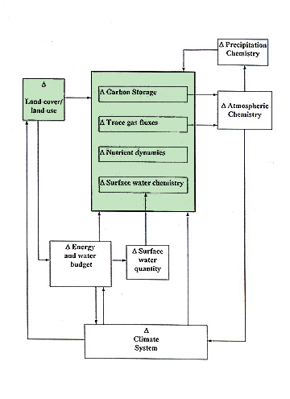
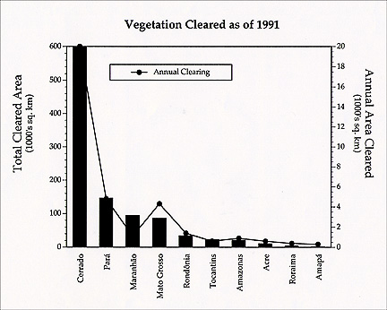
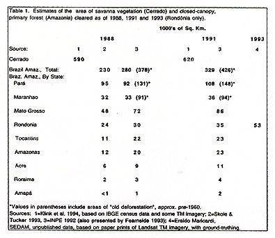
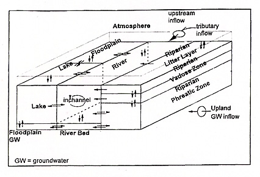

THE ECOLOGICAL COMPONENT
OF AN INTEGRATED AMAZON STUDY (also known as LBA):
THE EFFECTS OF FOREST CONVERSION
WORKSHOP REPORT
MANAUS, BRAZIL
MAY 22-24, 1995
AUTHORS:
| Steering Committee: Working Group Chairs: | |
|---|---|
| Carlos Cerri, Co-Chair | Patrick Crill |
| Niro Higuchi, Co-Chair | Eric Davidson |
| Jerry Melillo, Co-Chair | William De Mello |
| Thelma Krug | |
| Erick Fernandes | John Melack |
| Bruce Forsberg | Antonio Mozeto |
| Richard Houghton | David Skole |
| Michael Keller | João Vianey Soares |
| Luiz Martinelli | Leonel Sterberg |
| Daniel Nepstad | Susan Trumbore |
| Antonio Nobre | |
| Jeff Richey | |
| Reynaldo Victoria |
Plus, all Workshop Participants
October 30, 1995
TABLE OF CONTENTS
THE ECOLOGICAL COMPONENT OF THE INTEGRATED AMAZON STUDY
Introduction
The Science Question
The Five Themes of the Amazon Ecological Study – An Overview
The Amazon Ecological Study as Part of an Integrated Amazon Study
LAND-USE AND LAND-COVER CHANGE
Background
Research Questions
Research Approach
General Approach
Scale
Modeling Approaches
Other Approaches
Locations of Meso-Scale Studies
Products
Regional Analysis
Meso-Scale Studies
Future Trends
References
CARBON
Background
Research Questions
Research Approaches
Expected Products
Crosscutting Issues
References
NUTRIENT CYCLING
Background
Research Questions
Research Approach
Approaches for Specific Questions
Products and Cross-Cutting Issues
Surface Water Dynamics
Trace Gases
Carbon Accumulation and Land Use
Modeling
References
TRACE GAS
Background
Research Questions
Research Approaches: Gradients
Research Approaches: Methodology
Local Scale Measurements
Meso-Scale and Regional Measurements
Modeling Approaches
Research Approaches: Site Selection
Products
References
DYNAMICS OF SURFACE WATER CHEMISTRY
Background
Research Questions
Research Design
Low Order Streams: the "Local Scale"
Medium Order Streams: the "Meso-Scale"
High Order Streams: the "Regional Scale"
Expected Products
Cross-Cutting Issues
Remote Sensing
Data Management
Cross-Cutting: Modeling
References
THE ECOLOGICAL COMPONENT OF THE INTEGRATED AMAZON STUDY
The Amazon Basin, a vast area of 5.8 million square kilometers, contains almost one half of the world's undisturbed tropical evergreen forest and a large area of tropical savanna. The basin is important in the metabolism of the Earth, accounting for approximately 10 percent of the terrestrial net primary production. Equally important, it is a region of high biodiversity. Since the massive road-building efforts of the 1960's and 1970's, the Brazilian portion of the Amazon Basin has experienced considerable development. Large areas of forest and savanna have been cleared and converted to cattle pastures or row-crop fields in several states including Mato Grosso, Pará and Rondônia. Selective logging has changed the structure and composition of forested areas, particularly in eastern Pará and along river courses. Based on research to date, we have a general sense that these activities have caused changes in carbon and nutrient budgets on land, the fluxes of gases between the land and the atmosphere, and the exchange of materials between the land and river systems. We need additional research to refine our understanding of the magnitudes of the changes and the controls on key biogeochemical processes in Amazonia's ecosystems. An understanding of the controls on these processes is essential for us to develop predictions of the consequences of changes in land cover and land use.
In this document, we outline a plan to study the ecological and biogeochemical consequences of land-use and land-cover changes in the Amazon. The plan has been developed at five meetings held in the past two years: Brasília, Brazil, in September of 1993; Piracicaba, Brazil, in May of 1994; Manaus, Brazil, in February of 1995; Manaus, Brazil, in May of 1995; and Woods Hole, U.S.A., in August of 1995. More than 100 scientists from Brazil, Europe and the United States have participated in the development of the study plan.
The science question that will focus the ecological study in the Amazon is:
How do tropical forest conversion and re-growth, and selective logging, influence carbon storage, nutrient dynamics, trace gas fluxes and surface water chemistry in the Amazon?
"Forest conversion" refers to forest clearing and conversion to agricultural uses, especially cattle pasture, and "forest re-growth" refers to forest growth following the abandonment of agricultural lands. The science question calls for an explicit consideration of the effects of these land-cover and land-use changes on terrestrial carbon and nutrient budgets, the fluxes of trace gases between the land and the atmosphere, and the exchange of materials between the land and river systems. Implicitly, the question also calls for an understanding of these budgets, fluxes and exchanges in "primary" or pre-disturbance forest ecosystems.
The Five Themes of the Amazon Ecological Study – An Overview
The Amazon ecological study program will consist of five research themes: 1) land-cover and land-use change, 2) terrestrial carbon budget, 3) plant and soil nutrient budgets, 4) trace gas fluxes, and 5) dynamics of surface-water chemistry.
Theme 1, land-cover and land-use change, will focus on: documentation of past and current land-cover and land-use changes throughout Amazonia and development of a capability to predict the location and magnitude of future land-cover and land-use changes in the region.
Theme 2, the terrestrial carbon budget, will involve quantification of the magnitude of the carbon pools in vegetation and soils of intact forests and savannas, pastures, cultivated lands, and second growth and selectively-logged forests. It will also involve quantification of the rates of carbon exchange among the atmosphere, vegetation and soils, and the ways these rates are altered by natural and human disturbances.
Theme 3, plant and soil nutrient budgets, will focus on the same two areas for nutrients as Theme 2 will do for carbon. Nitrogen and phosphorus are nutrients of major interest.
Theme 4, trace gas fluxes, will focus on: 1) quantification of the fluxes between the land and the atmosphere; and 2) determination of how various factors control these fluxes. First priority will be given to studies of nitrogen oxides and methane for which natural and managed systems in the Amazon constitute a significant global source. Second priority will be given to carbon monoxide, volatile organic carbon compounds and reduced sulfur gases such as carbonyl sulfide and carbon disulfide.
Theme 5, dynamics of surface-water chemistry, will focus on the ways in which surface water chemistry is altered by land-cover and land-use change. Changes in the dynamics of carbon, nitrogen and phosphorus in riparian zones and streams are of particular interest.
The Amazon Ecological Study as Part of an Integrated Amazon Study
The development of this Amazon ecological study is being conducted in concert with an emerging overall, integrated Amazon study to be called the Large-Scale Biosphere - Atmosphere Experiment in Amazonia (LBA). The Amazon ecological study program will integrate well with several LBA companion research programs being developed to study other aspects of the Amazon's environment including its climate system, energy and water exchange between the land and the atmosphere, surface water hydrology, and atmospheric chemistry (Figure 1). The plan is to conduct these programs concurrently and to integrate them to the maximum degree possible through: (1) joint planning of the programs; (2) sharing of field sites, equipment, and logistical support as much as is possible; (3) exchange of data; and (4) development of simulation models that couple the key physical, chemical and biological processes operating at various space and time scales in the Amazon Basin.
The Amazon ecological study has the potential to interact with the other components of the integrated LBA study in a variety of ways. The study (components shaded in Figure 1) will provide

information directly to the complementary programs on the energy and water budgets, and atmospheric chemistry, and indirectly, through the program on energy and water budgets, to the programs on the climate system and on surface water quantity and flow pathways. Conversely, the ecological study will require information from all of the other integrated study program elements, either directly or indirectly.
LAND-USE AND LAND-COVER CHANGEThe changes in Amazonian vegetation associated with land-use practices exert a large influence on hydrology, climate, and global biogeochemical cycles (Crutzen and Andreae, 1990; Houghton, 1991; Houghton and Skole, 1990; Salati and Vose, 1984; Shukla et al., 1990; Nepstad et al., 1994). In the context of the Amazon ecological study, land-use and land-cover change is a particularly important topic because it encompasses both the explicit objectives of this Amazonian study and the objectives of Amazonian research institutions that are concerned chiefly with improvement of agricultural and forestry production systems. By advancing our knowledge of the rate and spatial pattern of land-use and land-cover change, and the factors that are driving this change, both global change questions and regional development questions can be addressed. For both of these purposes, it is important to improve our quantitative analyses of rates and spatial patterns of land-cover change, and our predictive understanding of the land-use practices that drive these changes.
The most conspicuous form of land-use in Amazonia is the conversion of closed-canopy forests to cattle pasture and agricultural fields. Estimates of the area and rate of this conversion vary widely, but have shown some convergence in recent years (Figure 1, Table 1). The Instituto Nacional de Pesquisas Espaciais (INPE) estimated a total deforested area of 280,000 km2 as of 1988, and an average annual rate of 21,000 km2 from 1978 to 1988 in Brazilian Amazonia (Fearnside 1993, INPE 1992). Skole and Tucker (1993) estimated that the total deforested area was 230,000 km2 in 1988, with the average annual rate from 1978 to 1988 being about 15,000 km2.
Some important forms of land-use and land-cover change are difficult to measure with satellite imagery. Selective logging can remove or destroy up to a fourth of the basal area and half of the canopy cover of Amazonian forests, and greatly increases their flammability (Uhl and Vieira, 1989; Uhl and Kauffman, 1990), but logging scars become difficult to detect with satellite imagery shortly after extraction (Lefebvre and Stone, 1994). C. Uhl and A. Veríssimo estimate that logging affects >4,000 km2 of forest in Pará State each year. It is also difficult to measure the area that burns each year, especially those areas of forest that experience ground fires (Setzer and Pereira, 1991). Moreover, in the portion of Amazonia that supports cerrado savanna vegetation, conversion to agriculture is more difficult to measure with satellite imagery. This vegetation has been excluded from regional deforestation estimates, even though government census data indicate that it is being converted to cattle pasture and agriculture at a faster rate than the closed canopy forests of Amazonia (Klink et al., 1995).
Although field studies in Amazonia have documented the high frequency of land abandonment following deforestation, and the generally vigorous regrowth of forests on abandoned pastures and agricultural sites (Saldarriaga et al., 1988; Uhl et al., 1988; Nepstad et al., 1991; Salomão, 1994), region-wide estimates of the total area of abandoned land, the annual rate of abandonment, and the rate at which secondary forests are converted back to pasture and agriculture are not available. With substantial ground-truthing, it is possible to distinguish among primary forests, secondary forests, and shrub-infested fields,


and among different ages of secondary forest using TM imagery (Brown et al., 1992; Skole, 1994; Moran et al., 1994; Lucas et al., 1993).
An approach to the analysis of land-use and land-cover change in Amazonia could be developed around a multi-level framework of (a) basin-wide analyses of land-cover change using fine and coarse resolution satellite remote sensing and region-wide survey statistics, (b) case studies coupled with intensive measurements at selected locations, and (c) the development of site-level and basin-level diagnostic and prognostic models.
This theme of the Amazon ecological study will address four research questions:
QUESTION 1: What are the rates and mechanisms of forest conversion to agricultural land-uses, and what is the relative importance of these land-uses?
This question centers on gaining better estimates of deforestation rates, and a quantitative understanding of the types of land uses which occur in the Amazon. By knowing the fraction of all deforestation which results in pasture, for example, it will be possible to know the relative importance of this land use compared to others when scaling up from local measurements.
QUESTION 2: At what rate are converted lands abandoned to secondary forests; what is the fate of these converted lands, and what are the overall dynamic patterns of land conversion and abandonment?
The focus of this question is on quantifying the patterns of clearing and abandonment, accidental burning of secondary vegetation, documenting transition probabilities, and specifying trajectories of land use after a site is cleared.
QUESTION 3: What is the area of forest that is affected by selective logging each year?
The emphasis of this question is on obtaining quantitative estimates of the rate of forest disturbance by important forms of forest degradation that are difficult to detect with satellite imagery, focusing on logging and associated fire as the chief agents of this kind of change.
QUESTION 4: What are plausible scenarios of future land-cover change in Amazonia?
The focus of this question is to understand the causes and mechanisms of land-cover change, which provide a basis for establishing how current conditions and trends manifest themselves over the longer term.
This theme of the Amazon ecological study will benefit from the large amount of information that has already been gathered and analyzed from Amazonia. In addition to the satellite-based maps of deforestation in closed-canopy forests of Amazonia (INPE, 1992; Skole and Tucker, 1993), the Instituto Brasileiro de Geografia e Estatística (IBGE) and the RADAMBRASIL study have gathered and mapped a large amount of data on the vegetation types, soils, population demographics, agricultural and forestry activities and a variety of economic indicators for all of Amazonia. The IBGE recently completed an analysis of many of these data layers that resulted in an economic-ecological zoning map of the region (unpublished data). Amazonian research institutions have also conducted a large number of studies on agricultural and forestry production systems, and the ecological processes that accompany human utilization of forest and river resources, which provide an important source of information for the study. The land-use and land-cover change research theme should attempt to engage and complement these ongoing research activities. In this way, the Amazon ecological study can help Amazonian institutions advance toward their research objectives as these institutions improve the quality, the depth and the long-term impacts of the study.
The land-use and land-cover change theme will support three scales of investigation. First, Amazonia-wide studies of the rate, location and spatial pattern of deforestation and forest alteration will be conducted using satellite remote sensing, government statistics, and survey data. At a second level of analysis, case studies and field investigations will be carried out in conjunction with multitemporal, high-resolution satellite data at 1:50,000 to 1;100,000 scale to gain insight into local-scale dynamics of deforestation, abandonment, and second-growth turnover. These case-study analyses would use data from census documents and from new surveys to define the parameters that control local land-use strategies, which would in turn illustrate how changes in land use affects changes in land cover. Because the causes of deforestation also may significantly relate to external institutional and economic factors, an elucidation of driving forces cannot be made with satellite data, surveys, and field studies alone. To develop a predictive model of land-cover and land-use changes, a third level of analysis will be necessary to define the external factors and conditions that influence deforestation in the Amazon.
This geographical focus of this study on Amazonia includes substantial areas of cerrado vegetation in Mato Grosso and Tocantins. Cerrado vegetation is incorporated into other themes of the study as a vegetation "endmember" situated at the dry end of a gradient of decreasing rainfall. Although it would certainly be desirable to obtain information about the cerrado region as a whole (measuring some 2 million km2), this task is beyond the scope of the Amazon ecological study.
QUESTION 1: What are the rates and mechanisms of forest conversion to agricultural land-uses, and what is the relative importance of these land-uses?
This question applies to all of Amazonia, and will provide information that drives all of the analyses of land-use effects on carbon storage, trace gas fluxes, and water use. It is a question that has been addressed successfully through analysis of Landsat TM satellite imagery in areas of closed-canopy forest. Rates of forest conversion to pasture and agricultural fields will be measured through analysis of satellite imagery for all of Amazonia at several time intervals. This dichotomous, "forest vs. non-forest" approach to deforestation will be supplemented by other studies designed to determine the relative contribution of pasture formation and shifting cultivation to measured deforestation rates. These studies may draw on interviews conducted in specific regions (e.g. Homma et al., 1993; Mattos and Uhl, 1994), government statistics (e.g. IBGE, unpublished and Fearnside, 1993), systematic ground-truthing in selected test sites (Skole et al., 1994; Moran et al., 1994), or other new approaches. This component of the study depends on the involvement of researchers with field experience in Amazonia, and must provide an effective system for rapidly disseminating digital map products to researchers involved in the broader study.
One goal of this study is to include the Amazonian cerrado vegetation in the estimates of forest conversion. Cerrado has not been included in previous estimates because the changes in cerrado vegetation through land-use are not as easily detected as the changes in closed-canopy forest.
QUESTION 2: At what rate are converted lands abandoned to secondary forests, what is the fate of these converted lands, and what are the overall dynamic patterns of land conversion and abandonment?
It has long been realized that land-cover change associated with deforestation is not a unidirectional process of forest conversion to agriculture. Large areas are abandoned to secondary growth. In Amazonia as much as 30% of the deforested land is in secondary growth. This is an important phenomenon that must be captured in analyses of the land-use/land-cover change process since it determines the correct calculation of net emissions, and also as it is an important land-use change phenomenon in its own right. The location and timing of secondary growth is not a simple problem. It will require careful analysis of the coupling between rates of deforestation and rates of secondary growth turn-over. The mere existence of a large second growth pool is not itself an indication of a large carbon sink; consideration must be given to the dynamics associated with this pool.
In addressing this question, two types of research are needed. Amazonia-wide estimates of the percentage of cleared land that is in secondary forest are required. With adequate ground-truthing, this is possible to do using TM imagery in areas of closed-canopy forest. More intensive case studies of landscape dynamics are needed that determine the age structure and rates of re-clearing (or accidental burning) of secondary forests, and the land-use patterns and strategies that are associated with these dynamics. Given the high degree of regional variation in the floristic composition of secondary forests, the use of remote sensing in addressing this question requires a large ground survey component. These intensive, meso-scale studies could shed light on the number of cycles of regrowth that characterize different Amazonian settings, and would provide an excellent opportunity to develop a more mechanistic understanding of the factors that limit rates of secondary forest growth. Previous studies show that secondary forests accumulate biomass at rates that depend on the intensity of land-use prior to abandonment (Uhl et al., 1988), and that multiple factors can converge to prevent secondary forest regrowth for many years (Nepstad et al., in press).
QUESTION 3: What is the area of forest that is affected by selective logging each year?
The area of forest that is affected by selective logging can be estimated through knowledge of the geographical locations of sawmills, their annual timber production rates, the amount of timber they harvest per hectare of forest, and the radius from which they harvest timber. Such an approach could be taken to mapping the areas of timber extraction for all of Amazonia. This study could be used in conjunction with remote sensing research to identify methods of mapping and monitoring selective logging practices.
Additional information that is needed for the various forms of selective logging includes the effect of logging practices on the forest, and the rate at which the remotely sensed spectral signatures of logged forests are lost through vegetation regrowth in logging scars. Prediction of future spatial trends in logging may be achieved through knowledge of forest timber stocks, the quality of road access, and trends in the domestic and international timber market.
Selective logging also renders closed canopy forests vulnerable to ground fires, which levels of tree mortality (Uhl and Buschbacher, 1985; Uhl and Kauffman, 1990; Nepstad et al., 1995). An important goal of this study is, therefore, an analysis of the frequency and areal extent of these ground fires, and the feasibility of measuring forest fire scars remotely.
In addition to ground fires, fire return intervals should be determined for non-forest ecosystems to assess fire effects on carbon flux, hydrology and nutrient export.
QUESTION 4: What are plausible scenarios of future land-cover change in Amazonia?
This question could be addressed at different scales and by using different approaches.
Large scale social (e.g. population growth and economic trends) and biophysical (e.g., climate change) variables which operate far outside the Amazon influence land-cover change in the Amazon. For instance, changes in the global economy as well as land tenure in the South of Brazil dramatically influenced deforestation in the Amazon basin in the late 1980s (Hecht and Cockburn, 1987; Skole et al., 1994), while the depletion of tropical hardwood stocks in Asia has stimulated logging in Amazonia (Veríssimo et al., 1992). The frequency of fires in eastern Amazonia may be best predicted by the El Niño Southern Oscillation events.
However, the driving forces of land use and land-cover change are also found at local scales. It is the logic employed by the landholder as he/she responds to the constraints and opportunities presented by the biophysical, political and economic setting that is the proximate causes of changes in land cover. The scaling of measurements and analyses of land-use and land-cover change parallels the scaling of analysis by other Themes involving in-situ measurements at specific sites up through landscape-scale analyses and finally to the level of the whole basin.
Techniques for monitoring land-use and land-cover change using remote sensing and geographic information systems have developed rapidly. However, measurement alone will not provide enough understanding to analyze the driving forces of global change. Thus, linking observations at a range of spatial and temporal scales to empirical models would provide a comprehensive approach to understanding the land-cover conversion process and at the same time provide important inputs to policy. Assessment of the magnitude and ecological implications of land-cover change is most relevant and useful when it is accompanied by modeling the linkages between socio-economic configurations and the processes of changes.
The primary utility of models is to provide a systematic approach to understanding a research problem. An important aspect of the work described here is the link between direct observations, case studies, and models in an effort to test or identify dominant features of the land-cover conversion process. The development of diagnostic models can lead to an improved understanding of system-wide processes of conversion, and at the same time provide credible, geographically-referenced predictions.
There are at least three classes of models that might be employed in the study, including those which allow prediction of when (Markov and Logistic), why (Regression) and where (Spatial statistical) land-cover conversion processes operate. The suite of empirical models can serve as a foundation upon which mechanistic and systems dynamics models can be built, the essential feature being the use of direct observations of spatial phenomena through satellites.
In addition to model development, the prediction of future land-use and land-cover change is also feasible through analyses of economic sectors. Cost-benefit analysis and sectoral policy studies can provide insights into the trends of industries such as beef cattle, perennial agricultural products, timber and minerals. When combined with projected changes in infrastructure (roads and energy sources), credit programs, regulatory policies, domestic and international markets, and land reform, predictions can be made about where and when land-use and land-cover change will take place.
Locations of Meso-Scale Studies
Detailed analyses of the very fine spatial and temporal dynamics of land-use and land-cover change would be carried out in a few selected locations. Each site would be approximately 200 km by 200 km, roughly equivalent to the size of a single Landsat scene. The following selection criteria are used to select the sites:
The following types of products would be produced, listed according to the overarching research activities for the land-use and land-cover change theme:
Brown, I. F., D. Nepstad, I. O. Pires, L. Luz and A. Alechandre. 1992. Carbon storage and land-use in extractive reserves, Acre, Brazil. Environ. Cons. 19:307-315.
Crutzen, P. J. and M. O. Andreae. 1990. Biomass burnings in the tropics: impacts on atmospheric chemistry and biogeochemical cycles. Science 250:1699-1678
Fearnside, P. M. 1993. Deforestation in Brazilian Amazon: The effect of population and land tenure. Ambio 22 (8): 537-545.
Hecht, S. B. and Cockburn A. 1989. The Fate of the Forest: Developers, Destroyers and Defenders of the Amazon. Harper, N.Y.
Homma A., et al. 1993. Dynamics of deforestation and burning in Amazonia: A microeconomic analysis. Rural Development in Forestry Network Paper 16c. London: Overseas Development Institute.
Houghton R. A. and Skole D. 1990. Carbon. In: The Earth as Transformed by Human Action. Cambridge University Press.
Houghton, R. A. 1991. Biomass burning from the perspective of the global carbon cycle. Pages 321-325 in Global Biomass Burning: Atmospheric, Climatic, and Biospheric Implications.. MIT Press, Cambridge MA:
INPE. 1992. Deforestation in Brazilian Amazonia. INPE Publication.
Klink, C. A., R. H. Macedo, C. C. Mueller. 1994. Cerrado: Processo de ocupação e implicações Pará a conservação e utilização sustentavel de sua diversidade biológica. WWF-Brasil report. 104 pp.
Lefebvre, P., T. Stone. 1994. Monitoring selective logging in eastern Brazilian Amazonia using multi-temporal Landsat Thematic Mapper imagery. ISPRS-Rio94.
Lucas, R. M., M. Honzak, G. M. Foody, P. J. Curran, C. Corves. 1993. Characterizing tropical secondary forests using multi-temporal Landsat sensor imagery. Int. J. Remote Sensing 14(16):3061-3067.
Mattos, M. and C. Uhl. 1994. Economic and ecological perspectives on ranching in the eastern Amazon. World Development 22(2):145-158.
Moran, E., E. Brondizio, P. Mausel and Y. Wu. 1994. Deforestation in Amazonia: land use change from ground and satellite level perspectives. BioScience 44(5):329-338.
Nepstad, D. C., C. R. de Carvalho, E. A. Davidson, P. Jipp, P. Lefebvre, G. H. Negreiros, E. D. da Silva, T. Stone, S. Trumbore and S. Vieira. 1994. The role of deep roots in the hydrological and carbon cycles of Amazonian forests and pastures. Nature 372:666-669.
Nepstad, D. C., C. Uhl and E. A. S. Serrão. September 1991. Recuperation of a degraded Amazonian landscape: forest recovery and agricultural restoration. Ambio 20 (6):248-255.
Nepstad, D. C., P. Jipp, P. Moutinho, G. Negreiros and S. Vieira. 1995. Forest recovery following pasture abandonment in Amazonia: Canopy seasonality, fire resistance and ants. In: Evaluating and Monitoring the Health of Large-Scale Ecosystems. Pages 333-349 in D. Rapport (ed.), NATO ASI Series, Springer-Verlag, New York.
Nepstad, D. C., C. Uhl, C. Pereira and J. M. C da Silva. In press. Barriers to tree establishment in an abandoned Amazonian pasture: seed availability, seed predation, herbivory and drought. Oikos.
Salati, E. and R. Vose. 1984. Amazon basin: A system in equilibrium. Science 225:129-138.
Saldarriaga, J. G., D. C. West, M. L. Tharp and C. Uhl. 1988. Long-term chronosequence of forest succession in the upper Río Negro of Colombia and Venezuela. J. Ecol. 76:938-958.
Salomão, R. 1994. A acumulação de biomassa em florestas secundarias da Zona Bragantina, Pará. Master's Thesis, Univ. Federal do Pará.
Setzer, A. and M. C. Pereira. 1991. Amazonia biomass burnings in 1987 and an estimate of their tropospheric emissions. Ambio 20:19-22.
Shukla, J., C. A. Nobre and P. Sellers. 1990. Amazon deforestation and climate change. Science 247:1322-1325.
Skole, D. L., W. H. Chomentowski, W. A. Salas and A. D. Nobre. 1994. Physical and human dimensions of deforestation in Amazonia. BioScience 44 (5):314-321.
Skole, D. and C. Tucker. 1993. Tropical deforestation and habitat fragmentation in the Amazon satellite data from 1978 to 1988. Science 260:1905-1910.
Uhl, C., A. Veríssimo, M. M. Mattos, Z. Brandino and I. C. G. Vieira. 1991. Social, economic, and ecological consequences of selective logging in an Amazon frontier: the case of Tailândia. For. Ecol. Manage. 46:243-273.
Uhl, C. and I. C. Vieira. 1989. Ecological impacts of selective logging in the Brazilian Amazon. Biotropica 21 (2):98-106.
Uhl, C. and J. B. Kauffman. 1990. Deforestation effects on fire susceptibility and the potential response of tree species to fire in the rain forests of the eastern Amazon. Ecology 71:437-449.
Uhl, C. and R. Buschbacher. 1985. A disturbing synergism between cattle ranching burning practices and selective tree harvesting in the Eastern Amazon. Biotropica 17:265-68.
Uhl, C., R. Buschbacher and E. A. S. Serrão. 1988. Abandoned pastures in Eastern Amazônia, I: Patterns of plant succession. J. Ecol. 76:663-681.
Veríssimo, A., P. Barreto, M. Mattos, R. Tarifa and C. Uhl. 1992. Logging impacts and prospects for sustainable forest management in an old Amazonian frontier: the case of Paragominas. For. Ecol. Manage. 55:169-199.
A measurement program designed to assess the carbon balance in the Amazon Basin should include assessment of both variability in natural ecosystems and net carbon fluxes associated with land-use change.
Conversion of natural systems for logging, pasture, or agriculture, and the fate of these converted lands cause large local transfers of carbon between atmosphere and ecosystems. Forest conversion in the Amazonia is a net source of carbon to the atmosphere, while recent Net Ecosystem Exchange (NEE) measurements indicate that undisturbed forest systems may be a net carbon sink. The importance of sequestration of carbon in regrowing forest on abandoned lands is uncertain. Studies are required to determine both the areal extent of different land uses and the associated changes in carbon. One approach to determining the flux of carbon over large regions is to track the areal extent of land-use change and associated changes in carbon stocks (Fearnside, 1992; Houghton et al., 1987; Houghton, 1991). This approach calculates the net flux of carbon between terrestrial ecosystems and the atmosphere that results from changes in land use. A related method relies on comparison of biomass stocks obtained from regional surveys conducted at different points in time, as has been done in some forests of the temperate zone (Apps and Kurz, 1994; Birdsey et al., 1993; Kauppi et al., 1992).
A second approach to the regional carbon balance emphasizes the natural carbon cycle, including net primary production (NPP) and respiration. Fluxes in the natural vegetation will reflect two processes. The first of these involves metabolic processes of photosynthesis, growth, and decay, affecting individual trees, and very short time and spatial scales. The second process, over stand-to-kilometer scales, is succession, which affects the number, age and species composition of stems, as well as the amount, nature and turnover rate of soil organic matter. At small scales, eddy-correlation measurement of CO2 flux above canopy will integrate both of these processes (metabolic and successional), while repeated measurements of carbon accumulation in living biomass, distribution and decomposition of dead biomass, and the nature and turnover of soil organic matter will allow for partitioning of net flux. Metabolic models based on fundamental physiological parameters are used to predict regional carbon balance on short (seasons - decades) timescales. This approach is too crude at present to be able to resolve net changes in terrestrial carbon stocks that might account for the imbalance in the global cycle, but it predicts the variations in flux expected as a result of changes in climate and atmospheric carbon dioxide concentrations (Melillo et al., 1993; Potter et al., 1993).
While some initial attempts have been made to bring these two approaches (land-use change and metabolic models) together, it is important to recognize that they require different types of data and assumptions and have different sources of error. Changes in carbon storage resulting from human management of the landscape (clearing forests, logging, cultivation, afforestation) often result in well defined locations of change and large changes in carbon per hectare. In contrast, changes in carbon storage resulting from environmental changes in temperature, moisture, and, perhaps, carbon dioxide concentrations, affect areas of undefined extent, and the accompanying changes in carbon stocks per hectare may be subtle. While natural disturbances may be considered small enough to be irrelevant compared to the carbon fluxes associated with land-use changes (when considered on an areal basis), the integration of smaller fluxes over the larger total area that remains as natural vegetation implies natural fluxes cannot be ignored in an Amazonian carbon balance.
Another approach to determining the large scale flux is through direct measurement of flux. Eddy correlation measurements of CO2 flux above the forest canopy integrate stand-level and perhaps successional changes in carbon stocks on time scales from days to years. When combined with intensive measurements of the flows of C, these allow development and testing of process models of carbon flow and storage at the stand level. Aircraft measurements of CO2 flux provide comparisons of carbon exchanges between stands and surrounding regions, providing information on both variability among similar stands and differences among land-cover types.
At larger scales, interpretation of CO2 concentration patterns around the basin (using atmospheric tracer models) can be used to deconvolve sources and sinks of trace gases over very large regions (Enting and Mansbridge, 1991; Tans et al., 1990; Ciais et al., 1995). Another component of the LBA activity may attempt to derive a basin-wide estimate of net CO2 flux. Comparison of CO2 with O2, 13CO2, tracers of biomass burning (CO), and other trace gases will provide additional confidence in such estimates as well as basin-wide fluxes for other trace gas species. This information will provide a basin-wide test of the ability to predict regional carbon fluxes from process models coupled to remote sensing and other data layers for the basin. In particular, estimates of the deliberate (land use) and inadvertent (undisturbed ecosystem) fluxes should sum to the measured total net flux. If they do, we gain confidence that we understand the carbon cycle in a major region of the earth. If they do not, we will have learned something about our techniques and our understanding.
A major challenge and opportunity of this research study in Amazonia is to determine both the human management-induced and the climate-induced components of the net flux of carbon and to compare the results with independent measurement of total net flux for the entire region. Measurement of flux for the entire Basin will not be a part of the Amazon ecological study, but may be conducted by the LAMBADA/BATERISTA portion. Carbon is a part of the nutrient cycle in all ecosystems, thus, questions pertaining to nutrients will be similar to those of carbon.
Over-arching questions across temporal scales (hours to decades) and spatial scales (meters to basin level) for the carbon cycle include:
These questions imply a general need to asses carbon pools and fluxes in a variety of land-cover and land-use types. More specific research questions help focus the research design:
QUESTION 1: What is the seasonal and interannual variability of the CO2 flux between the atmosphere and different land-cover/land-use types and from the Amazon region as a whole? What factors influence the balance of photosynthesis, respiration, plant recruitment and mortality that give rise to these net fluxes at the ecosystem scale?
QUESTION 2: What are the relative contributions of fluxes from natural and disturbed ecosystems to the net basin-wide flux? (To what degree do natural sinks and sequestration of carbon in regrowing forests balance/offset sources associated with forest conversion?)
Direct measurements of net ecosystem exchange in terra firme forests suggest that the natural forest stands studied are net sinks of carbon. These sinks may offset the increases in carbon release to the atmosphere generally thought to be derived from deforestation.
Recent improvements in our knowledge of the total area deforested in Amazonia based on remote sensing studies reveal that this is no longer the major uncertainty in our understanding of net carbon fluxes from the region. Instead, we need better knowledge of the rates of forest clearing, the fate of cleared lands, and the management practices employed in the land uses for the region (see section on land cover and land use). We also need to improve our knowledge of biomass and soil carbon stocks and their spatial variability within a vegetation or soil association and across the region. We need additional information on how forest clearing and subsequent land management practices affect carbon storages and exchanges. This requires knowledge of rates of biomass decay and re-growth, the fate of soil organic carbon, and the fate of timber removed from the forests. Important questions to address for specific land-use/land-cover regimes:
QUESTION 3: How do pools and fluxes of carbon and nutrients in soils of pasture/cropland change over time; what factors (soil properties, management practice) determine carbon gain or loss?
This question is perhaps most important as a link to trace gas emissions, and a consequence of changes in other nutrients, because changes in carbon stocks in soils are generally minor compared to those of vegetation.
QUESTION 4: What are some biologically-mediated influences on carbon sequestration in abandoned pastures and croplands?
In particular how large are the relative contributions of (1) nutrient depletion and (2) lack of seed source/live forest roots/invasion limitations (3) extirpation of critical components of the soil biota (fauna, ants, etc.) that influence nutrient availability, plant survival and hence, carbon sequestration?
QUESTION 5: How does selective logging change the storage and cycling of carbon in forests?
This includes influences on microclimate, decomposition, ecosystem structure, and probability of future disturbances (i.e., fire) that will further influence carbon dynamics.
Recent data on timber harvest intensity and wood production indicate that selective logging of otherwise intact stands of forest contributes significantly to the area of forests altered in Amazonia. Selective logging may result in decreased carbon storage in living biomass and increased emissions of carbon through decomposition processes for the region affected. The removal of stemwood to long-term storage pools together with regrowth following harvest may lead to a net carbon sink. The net flux of carbon from forest end products needs investigation. There is evidence that logged forests may become more prone to fire because of the large fine fuel loads left behind and a drier microclimate near the litter layer. It is difficult to estimate the total area subject to selective logging in Amazonia, and it is even more difficult to quantify the changes in carbon storage and emissions.
QUESTION 6: What factors (land-use history, soil properties, etc.) control the rate of carbon sequestration in biomass and soils of regrowing forests?
There are major uncertainties in our understanding of the carbon dynamics of re-growing forests in Amazonia. It has been suggested that secondary forest re-growth following pasture or crop land abandonment may be responsible for much more carbon accumulation in Amazonia than previously estimated. This suggestion needs to be investigated. There is also evidence in some regions that secondary forests are cleared and re-converted to agriculture after only a few years of re-growth. Thus, better information on the ages of secondary forests and the rates of carbon accumulation at various ages is desired.
QUESTION 7: What portion of the basin-wide flux of CO2 is from fire? How do ecosystems recover from fire? Are there statistical relationships between fire occurrence/frequency and land management (e.g., selective logging)?
Some management practices include fire as a way of concentrating nutrients in available soil pools. Other practices, such as selective logging, may increase the flammability of forests and affect fire frequency. Field measurement of carbon emissions from active fires is probably not necessary to address this question, and thus, is not a major focus for this research program.
We need additional measurements of carbon stocks and fluxes in vegetation and soil of primary forests, as well as selectively logged forests, pastures, agricultural lands and secondary growth forests of known ages and management histories at a number of locations throughout the Amazon Basin and especially in regions of rapid land-use change (i.e., Pará and Rondônia). Since these data are difficult to obtain, it will be important to identify the greatest uncertainties and largest gaps in our present knowledge base and then establish priorities for new measurements. Many sites may exist where a partial data set has been obtained (such as above-ground biomass), that may be augmented through addition of below-ground, or standing dead biomass estimates. The sites should be distributed across climate and fertility (soil-type) gradients, as well as by age or time since last major land-use change (for pastures and regrowing forests). Indirect methods to determine the biomass and associated factors such as leaf area index (LAI) should be tested and calibrated around these sites. Remote-sensing approaches should be used to extend biomass data sets, though these methods need to be better tested and quantified.
Task 1. Improved estimates of biomass in different land-cover types
We envision the need to for a suite of sites at which carbon stocks are measured along regional gradients of climate (specifically seasonality of precipitation) and soil type (as identified by nutrient status). The level of detail of measurement among sites should be stratified, with some sites used for calibration, some as checks on estimates based on remote sensing or mapping techniques. We envision the need for at least three levels of sampling intensity:
Task 2. Improved understanding of the dynamics of carbon change with land-use/management
Dynamics of carbon accumulation/loss in biomass and soils in managed pasture and regrowing systems may be assessed by careful selection of sites along chronosequences such as pasture age, or time since a change in management practice. These sites should be carefully chosen to reflect the most important land-use/land-cover changes in a given region (e.g., selective logging and pasture abandonment in eastern Amazonia, fire or cultivation in cerrado). There is a need to quantify pools and dynamics in all three distinct phases of the land-use gradient, including undisturbed systems, the exploitation phase (when changes may be particularly rapid), and the recovery phase. It will be important to design sampling sites to investigate the following questions in particular:
Soil carbon stock changes following disturbance such as deforestation are small compared to accompanying biomass changes, but much of the fast-cycling carbon in these ecosystems may reside in the soil organic matter. Studies of soil carbon should thus focus on its dynamics and turnover rate and relation to nutrient dynamics, trace gas fluxes, and interannual variability in carbon sequestration and release in ecosystems. Soil measurements should include measurements of carbon stock, an assessment of how much of that organic matter is in labile and refractory pools, and CO2 flux (perhaps at a subset of sites?). Tools to use include isotopic methods (13C, 14C), rate of change following disturbance, decomposition studies, and related models.
At a subset of the sites used to study carbon dynamics, it will be important to measure the net ecosystem exchange (NEE) either continuously or over significant portions of several growing seasons using tower eddy correlation to determine if these ecosystems are accumulating carbon. Tower sites should coincide with one point along a time or management gradient. The NEE measurements will be important as an overall test of models of carbon sequestering or loss from vegetation and soils developed from chronosequences and gradient sampling. At these sites, measurements of carbon stocks and fluxes will be similar to those outlined for intensive sites (above), but additional measurements will be needed to determine higher frequency fluxes between vegetation, soils and atmosphere. In addition to the set of climatic and radiation parameters measured at the towers, the following should be given serious consideration for frequent or continuous measurement: soil water content; CO2 respiration from soil, stems, boles, roots(?); vegetation photosynthesis and respiration in response to photosynthetically active radiation (PAR) and other variables; leaf area index and phenology; litterfall; and root turnover (?). Ground surveys of live/dead vegetation in the flux tower footprint, and vertical profiles of foliar nutrient content (including lignin) should be conducted seasonally or annually. Such measurements would be useful for partitioning the observed NEE among components of the carbon transfers between soil, live and dead vegetation and atmosphere within the tower footprint, and determining the factors controlling the variability in overall carbon flux. Estimates of net primary production (NPP) could be made at these sites from the data gathered and used to calibrate AVHRR/NDVI based measures of primary productivity.
Task 3. Understanding causes of seasonal and interannual variability in natural systems
An important part of the overall LBA activity includes assessment of how the natural vegetation interacts with global climate and carbon budgets. As part of this effort, towers should be located in primary vegetation along a gradient in climate and soil properties across the basin. Tower deployments should be long enough to capture year-to-year variability in NEE (and its relation to climate). Ancillary measurements at these tower sites must include those expressed above in order to develop a process-based understanding of interannual carbon storage changes at each site. Locating towers along climate gradients will allow important understanding of how the fluxes of carbon vary with moisture, temperature, soil nutrient status.
Task 4. Scaling up to region and basin-wide estimates of net carbon exchange (for comparison with basin-wide measurements carried out by the other components of LBA).
Information gathered during Tasks 1,2, and 3 will be used to parameterize and test process-based models of carbon exchange. These models when combined with GIS/remote sensing information on the spatial distribution of land cover/soil properties and climatic variables, will provide estimates of regional and basin-wide fluxes of carbon that may be compared to aircraft eddy flux measurements and basin scale carbon balance estimates from other LBA components.
Task 1. Distribution of biomass across basin, as well as relationships between biomass, climate and soil properties.
Task 2. Measures of the balances among gross photosynthesis, gross respiration and net primary production at a number of sites located within gradients of climate or land cover/use. Calibration sites for remote sensing based estimates of NPP (AVHRR/NDVI, other?).
Task 3. Partitioning the NEE measured at one site into changes in soil and biomass stocks, and how that partitioning varies with climate.
Task 4. Predictions of regional and basin-wide net carbon exchange between atmosphere and terrestrial ecosystem for comparison with aircraft and basin-wide flux measurements.
Apps, M. J and W. A. Kurz. 1994. The role of Canadian forests in the global carbon budget. Pages 14-39 in M. Kanninen (ed.), Carbon Balance of World's Forested Ecosystems: Towards a Global Assessment. Publications of the Academy of Finland, Helsinki.
Ciais, P., P. P. Tans, J. W .C. White, M. Trolier, R. J. Francey, J. A. Berry, D. R. Randall, P. J. Sellers, J. G. Collatz, and D. S. Schimel. 1995. Partitioning of ocean and land uptake of CO2 as inferred by 13C measurements from the NOAA Climate Monitoring and Diagnostics Laboratory global air sampling network. J. Geophys. Res. 100:5051-5070.
Birdsey, R. A., A. J. Plantinga and L. S. Heath. 1993. Past and prospective carbon storage in United States forests. For. Ecol. Manage 58:33-40.
Enting, I. G. and J. V. Mansbridge. 1991. Latitudinal distribution of sources and sinks of CO2: results of an inversion study. Tellus 43B:156-170.
Fearnside, P. M. 1992. Greenhouse gas emissions from deforestation in the Brazilian Amazon, Volume 2. In W. Makundi and J. Sathaye (eds.) Carbon Emissions and Sequestration in Forests: Case Studies from Seven Developing Countries, U. S. Environmental Protection Agency and Lawrence Berkeley Laboratory, Berkeley, CA.
Houghton, R. A. 1991. Tropical deforestation and atmospheric carbon dioxide. Climatic Change 19:99-118.
Houghton, R. A., R. D. Boone, J. R. Fruci, J. E. Hobbie, J. M. Melillo, C. A. Palm, B. J. Peterson, G. R. Shaver, G. M. Woodwell, B. Moore, D. L. Skole and N. Myers. 1987. The flux of carbon from terrestrial ecosystems to the atmosphere in 1980 due to changes in land use: geographic distribution of the global flux. Tellus 39B:122-139.
Kauppi, P. E., K. Mielikainen and K. Kuusela. 1992. Biomass and carbon budget of European forests, 1971-1990. Science 256:70-74.
Melillo, J. M., A. D. McGuire, D. W. Kicklighter, B. Moore, C. J. Vorosmarty and A. L. Schloss. 1993. Global climate change and terrestrial net primary production. Nature 363:234-240.
Potter, C. S., J. T. Randerson, C. B. Field, P. A. Matson, P. M. Vitousek, H. A. Mooney and S. A. Klooster. 1993. Terrestrial ecosystem production: A process model based on global satellite and surface data. Global Biogeochem. Cycles 7:811-841.
Tans, P. P., I. Y. Fung and T. Takahashi. 1990. Observational constraints on the global atmospheric CO2 budget. Science 247:1431-1438.
The flows of energy, water, and carbon within ecosystems of Amazonia are intimately linked with the cycling of essential plant nutrients. Hence, the ways in which changes in land use and land cover affect carbon stocks, trace gas emissions and surface water chemistry are mediated by perturbations in nutrient cycles. An experimental design for studying effects of land conversions must include consideration of natural distributions of stocks of nutrients within forest ecosystems, the processes that determine flows of nutrients, and how land conversion affects those stocks and flows.
Human alteration of natural ecosystems and their conversion to different agricultural uses changes the storage of nutrients and rates of organic matter and nutrient cycling. Some important examples of how these actions alter carbon and nutrient flows include the direct volatilization of carbon and nitrogen stocks formerly in the vegetation caused by biomass burning (Ewel et al., 1981; Fearnside, 1993; Kauffman et al., in press), increases of soil stocks of elements such as P, K, Ca and Mg after burning as these elements are transferred from pools formerly in the vegetation (Nye and Greenland, 1964; Sanchez, 1976; Uhl and Jordan, 1984; Kauffman et al., in press), and removal of stocks of nutrients such as Ca, Mg, P and N in logging operations. Other changes include alterations to the amount of carbon and nutrients stored in the soils converted to pasture or other agricultural uses and changes to nutrient cycling rates (Montagnini and Buschbacher, 1989; Choné et al., 1991; Nepstad et al., 1995; Neill et al., 1995; Moraes et al., in press). These changes are linked to soil fertility, which in turn affects future changes to land use and land cover. Changes to trace gas emissions are often closely associated with changes to soil nutrient cycling patterns in these non-forest systems. (Luizão et al., 1989; Keller et al., 1989). Further modifications to nutrient cycling patterns can occur over time under altered land use, such as when pastures age or degrade (Buschbacher et al., 1988; Robertson and Tiedje, 1988). These changes can influence ecosystem responses, such as the rate at which forests regrow, which are tied to other components of the Amazon study, such as carbon sequestration by regrowing vegetation and the transport and processing of nutrients to downstream aquatic ecosystems. The Manaus workshop synthesis paper (Fernandes et al., manuscript) provides additional background on the effects of land-use change on nutrient cycling in Amazonia.
Study of the effects of land-cover and land-use change on nutrient cycling as part of
this science plan will be focused the changes that are dominant in terms of area in the
Amazon. Although better estimates of the relative importance of various types of forest
conversion are expected to result from this campaign, decisions must be made now with
existing data and field experience regarding the most important types of changes that we
believe are worthy of study of nutrient dynamics. Studies should focus on understanding
changes to nutrient dynamics in the following situations, all originating with intact
Amazon forest:
forest ----> slash/burn ----> crop ----> fallow ----> slash/burn ----> crop ----> pasture
QUESTION 1: How do the stocks, cycling rates and budgets of carbon and important elements N, P, K, Ca, Mg and Al change under the different land covers and land uses?
Unlike the relatively large database that exists for nutrient budgets in temperate ecosystems of North America and Europe, data on nutrient budgets for tropical ecosystems in general, and for Amazonia in particular, are very few. This information is important for understanding controls on plant productivity and ultimately carbon storage in natural and agricultural systems. Information on nutrient budgets in intact and altered forest is essential to an understanding of how land-use change alters material transfers between terrestrial ecosystems and the atmosphere and between terrestrial ecosystems and aquatic ecosystems.
QUESTION 2: How is pasture productivity and the duration of the period of productive pasture use related to the availability of P or other soil nutrients?
Good estimates of carbon budgets require knowledge of the fate of converted land, including how long it stays in pasture. Pasture soils can gain carbon if they remain productive and they can lose carbon if they become unproductive. While there are many factors that affect pasture productivity, several studies (Toledo and Serrão, 1982; Gonçalves and Loiveira, 1984; Falesi, 1976) and the use of P fertilizer by some ranchers suggest that P is one of the primary limiting factors. Research on this question should aim to develop predictive capabilities of the probably length of the pasture phase given information on soil properties, climate, and management practices. In addition to the objective of improving budgeting of carbon stocks, this effort has obvious practical implications for sustainable development and should be of interest to local ranchers.
QUESTION 3: What are the major factors that control the rates of regrowth and carbon accumulation in abandoned pastures and regrowing secondary forests?
Rates of secondary regrowth are important for calculations of carbon budgets and water balance, trace gas emissions, and leaching of nutrients to ground and surface water. Controls of forest regrowth are poorly understood, but may be related to soil stocks of nutrients and organic matter, the size of pasture clearing, and hence the distance to the nearest seed source, the presence of sprouts from live tree roots that have survived the pasture phase, or other biotic factors, such as the presence of earthworms and cutter ants, or microorganisms such as mycorrhizae (Nepstad et al., 1991; Nepstad et al., in press). Understanding controls on forest regrowth is important for predicting regrowth from different land covers and land uses.
QUESTION 4: How does the capability of native vegetation to extract nutrients from soil differ from the capabilities of exotic pasture grasses?
Native and non-native plant species can have very different nutrient requirements and different influences on patterns of ecosystem nutrient cycling. Native vegetation may obtain "less available" forms of nutrients or an ability to exploit a greater soil volume or depth to obtain nutrients. Differences in nutrient cycling between native forest and planted pastures have implications for the longevity of pastures and the rate of regrowth of forests, both of which are important controls on ecosystem carbon stocks. It is also important to develop an understanding of how tests of soil nutrient status, developed primarily to aid management of agroecosystems, may or may not be transferable to management of native forest species.
QUESTION 5: How does the intensity of selective logging influence forest soil moisture, microbial process related to decomposition, and the release of nutrients, thus altering forest regrowth and flammability?
Selective logging alters ecosystem structure, ecosystem water budgets, and nutrient cycling patterns (Uhl and Kauffman, 1984; Uhl and Vieira, 1989). Up to a point, as logging intensity increases, canopy interception and evapotranspiration of water decrease and soil moisture increases. This in turn affects a suite of faunal and microbial activities in the soil that are related to decomposition. However, as logging intensity increases, sub-canopy humidity decreases, resulting in drier litter and greater risk of flammability. These changes affect forest regrowth and forest flammability, both of which are critical for understanding ecosystem carbon balance.
This plan calls for field measurements of nutrient stocks and cycling rates at specific sites designed to answer the five questions outlined above. These measurements should be focused in natural forest and in areas that fall into the major categories of human-driven land-use and land-cover change now occurring in Amazonia (as stated in the introduction: forest conversion directly to pasture, selective logging, slash and burn agriculture, pasture degradation and abandonment). Because of the important role nutrient cycling plays in controlling ecosystem carbon accumulation, trace gas fluxes and land-water transfers, measurements of nutrient dynamics should be coordinated with the carbon, trace gas and surface water chemistry components of the Amazon Basin study to the maximum extent practicable.
Gradients of climate and soil type are two additional factors that must be carefully considered in the approach and site selection for examination of nutrient cycling as part of the Amazon study. The most important climatic gradient that affects soils, vegetation, and nutrient cycles is the severity of the dry season, which ranges from virtually no dry season in the northwest Amazon to a dry season of six months or more in transition to the cerrado region of the southeast. Closed moist evergreen forest extends across a large part of this gradient, so that about half of the forested region experiences three months or more when evapotranspiration exceeds precipitation, and significant water uptake from soils is needed to maintain an evergreen canopy. This same gradient is apparent in a map of soil moisture regimes, with perudic regimes mapped in the northwest, the udic regime in the middle part of the Amazon, and the ustic regime mapped in a arc along the eastern and southern boarders of the basin.
Soils also vary across the Amazon (Cochrane and Sanchez, 1982; Richter and Babbar, 1991). Variation in parent material (i.e., geologic formations) is mostly independent of current climatic patterns. Broadly speaking, there is a preponderance of dystrophic (low base status) soils in Pará and Amazonas and a greater relative area of eutrophic (high base status) soils in Rondônia, but eutrophic and dystrophic soils can be found in all regions. Soil texture (sand, silt, and clay) also varies at both basin-wide and local scales. Soil texture affects many processes, including plant-available-water holding capacity, diffusivity of gases, hydraulic conductivity, and sequestration of soil carbon. A large proportion of Amazonian soils are classified as either oxisols or ultisols, according to USDA Soil Taxonomy (Moraes et al., 1995). In very broad terms, much of the area of the finest textured (high clay) soils are oxisols and many soils with lower clay contents are ultisols, but the distinction between these soil orders is not always particularly useful for stratifying soils by texture or base status. Distinction between soil textures and between eutrophic and dystrophic soils should not be viewed as a dichotomy, but rather as a continuum. Both the US and Brazilian soil classification systems contain information on base status at intermediate levels in the hierarchical classification systems. However, it must be emphasized that the RADAM soil map at 1:1,000,000 provides only a coarse-scale summary of the dominant soil types within an area, and that each map unit contains "inclusions" of soils that differ from the type for which the map unit is named. There is no substitute or acceptable short cut for field and laboratory analysis of soils when candidate research sites are being considered.
Selection of specific sites for field measurements of nutrient cycling should incorporate climatic variation from perennially wet to a strong dry season that lasts up to six months. Special attention should be paid to controlling for the variability of soil types in selected sites. The criteria of soil texture (high clay, low clay) and soil base status (high base saturation, low base saturation) should be used to stratify multiple sites within a climatic regime. Particular effort should be made to restrict the most inclusive and intensive nutrient cycling study sites to locations that fall on the oxisol and ultisol soil types that cover the majority of the Amazon.
Below we outline potential study approaches to specific questions. This list is not intended to be exhaustive or to discourage other field and experimental approaches. Rather, these approaches are presented as ideas for ways in which the effects of forest conversion on nutrient cycles can be addressed in light of other studies of carbon stocks, trace gas emissions, and surface water chemistry that are part of the Amazon study.
Question 1. How do the stocks, cycling rates and budgets of carbon and important elements N, P, K, Ca, Mg and Al change under the different land covers and land uses? These changes to nutrient cycling can be addressed in native forest and in adjacent altered sites. Certain basic measurements are essential. These should include total stocks of N, P, K, Ca, Mg, Al, and carbon in soils and vegetation. The effort for measuring nutrient pools in vegetation should be coordinated with estimates of biomass. The topsoil should be sampled in relatively small increments (e.g., 0-5 cm, 5-10 cm, 10-20 cm), as concentrations may change rapidly with depth. Deep soil should also be considered as a potential source of nutrients, so that nutrient stocks should also be measured at depths >2m if possible. Stocks of nutrients in harvested materials (logs, crops, cattle) should also be measured where appropriate, as well as losses resulting from use of fire. Bulk density and soil texture also must be measured by depth increment to convert measures of concentrations of soil carbon and soil nutrients to total stocks. The accuracy of bulk density measurements is equally important as the accuracy of nutrient concentrations.
Indices of "available" nutrients may be particularly useful for studies of pasture and crop productivity and for studies of trace gas emissions. Suggested methods include:
Methods outlined in the Tropical Soil Biology Fertility Program (Anderson and Ingram, 1989) provide guidance on these methods. Atmospheric inputs of nutrients (especially dry deposition), are important as a potential source of essential plant nutrients. Frequent collections to obtain fresh samples are necessary to obtain reliable data but these are difficult to obtain. Throughfall and litterfall are among the most readily measured flows of nutrients within ecosystems. Ratios of nutrients within these flows provide indications of the relative abundance of nutrients, and the absolute amounts indicate rates of nutrient cycling.
Question 2. How is pasture productivity and the duration of the period of productive pasture use related to the availability of P or other soil nutrients? The role of P or other nutrients in controlling pasture productivity may be addressed with chronosequences and with P and other amendments. As cattle pastures are widespread, these experiments should be conducted across the climate gradient of the region and across gradients of soil base status and soil texture. The duration of the productive pasture phase is a function of P availability. Possible confounding factors are the degree of biomass removal during pasture formation, burning, relocation of nutrients resulting from rotating cattle among pastures, and grazing intensity.
Question 3. What are the major factors that control the rates of regrowth and carbon accumulation in abandoned pastures and regrowing secondary forests? Nutrient cycling control of forest regrowth may be addressed by studies along gradients of soil organic matter and soil fertility and by amendments. The role of seed sources could be addressed by comparing regrowing forest plots differing distances from existing forest, or by experimental manipulation of seed densities. The effects of stump sprouts could be examined by mechanical or herbicide removal of tree rootstocks. Soil fauna effects could be addressed by assessments of faunal and microbial populations and activities.
Question 4. How does the capability of native vegetation to extract nutrients from soil differ from the capabilities of exotic pasture grasses? The role of native compared with exotic vegetation can be addressed with mass balance studies, pot studies, tracers, and studies of mychorrizal associations. This should be tested in both dystrophic and eutrophic soils because of differences in nutrient availability, and it should be tested across a climate gradient where rooting depth may also vary.
Question 5. How does the intensity of selective logging influence forest soil moisture, microbial process related to decomposition, and the release of nutrients, thus altering forest regrowth and flammability? The effects of selective logging need to be tested in both dystrophic and eutrophic soils because the degree of nutrient availability may determine whether release of nutrients from decomposition is an important factor in regrowth of the logged forest. A study could address the interactions of microclimate and faunal and microbial processes, with logging intensity providing the variation in microclimate within a forest. A climate gradient across the region is needed because flammability of the forest may be a serious risk only within the ustic moisture regime. Variations in logging intensity could form the basis for an experimental design.
The product from this activity will be a greatly expanded process-level understanding of nutrient cycles and budgets under different land covers and land uses. It will produce a database that will provide an important basis for understanding land-atmosphere and land-water connections in the larger Amazon Basin study.
This information will also be critical for the following cross-cutting issues:
Forest conversion that decreases evapotranspiration probably causes increases in runoff, which provides a mechanism for potential leaching of nutrients through the soil profile and loss of nutrients in particulate matter eroded from the soil surface. However, nutrient cycling processes (including decomposition, microbial immobilization, rooting depth, plant nutrient uptake, and fertilization) also affect the potential for nutrient losses from terrestrial ecosystems and inputs to aquatic systems via leaching and erosion. Hence the flow of water through the landscape must be integrated with the cycling of nutrients in order to understand the exchanges of nutrients between terrestrial and aquatic components of the landscape. This linkage will require interdisciplinary collaboration.
Trace gas emissions are also obviously linked to cycling of nutrients, particularly nitrogen. Forest conversion and management of croplands and pasture lands affect both nutrient cycling and diffusivity of gases within the soil. Decreases in evapotranspiration (ET) can result in increased soil water storage, decreased gaseous diffusivity, and decreased redox potential, which has important implications for the species of N trace gas emitted from the soil and the balance between methane production and consumption within the soil. Cattle grazing and other practices that alter bulk density and porosity also affect gaseous diffusivity. Hence, studies of nutrient cycling must be integrated with studies of physical processes of water movement and gaseous diffusivity.
Carbon Accumulation and Land Use
Studies of nutrient cycling are directly connected to studies of carbon accumulation in plant biomass because soil fertility can directly influence plant growth. Indirectly, nutrient cycling may influence land uses, such as the time land is used as productive pasture, or the time land spends as regrowing forest before it re-enters agricultural production. A better understanding of nutrient dynamics in different land cover and land uses will greatly improve our understanding of carbon accumulation and the forces driving land-use change.
The most widely used biogeochemical models (e.g., CENTURY, CASA, TEM) link carbon cycles with C:N ratios and lignin contents of various compartments of vegetation and soils. New models might also be developed, but it is likely that carbon cycles and budgets will be linked to nutrients, including P, in nearly all such models. Modeling is a powerful tool for interpolating and extrapolating as well as for testing our understanding of the modeled linkages of processes within the ecosystem and among ecosystems in a landscape. Hence, studies of nutrient dynamics should be coordinated with the needs of models for input data and validation data of existing models and perhaps for development of new models.
Anderson, J. M. and J. S. I. Ingram. 1989. Tropical Soil Biology and Fertility: A Handbook of Methods. CAB International, Wallingford, UK.
Choné, T., F. Andreux, J. C. Correa, B. Volkoff and C. C. Cerri. 1991. Changes in organic matter in an oxisol from the central Amazonian forest during eight years as pasture, determined by 13C composition. Pages 307-405 in J. Berthelin (ed.), Diversity of Environmental Biogeochemistry, Elsevier, NY.
Cochrane, T. T. and P. A. Sanchez. 1982. Land resources, soils and their management in the Amazon region: a state of knowledge report. Pages 137-209 in S. B. Hecht (ed.), Amazonia: Agriculture and Land Use Research. Centro Internacional de Agricultura Tropical, Cali, Colombia.
Ewel, J., C. Berish, B. Brown, N. Price and J. Raich. 1981. Slash and burn impacts on a Costa Rican wet forest site. Ecology 62:816-829.
Falesi, I. C. 1976. Ecosistema de pastagem cultivada na Amazônia Brasileira. Centro de Pesquisa Agropecuária do Trópico Umido. EMBRAPA Boletin Técnico no. 1.
Fearnside, P .M. 1993. Deforestation in Brazilian Amazonia: the effect of population and land tenure. Ambio 22:537-545.
Fernandez, E. C. M., Y. Biot, C. Castilla and A. do Carmo Canto. The impact of selective logging and forest conversion for agriculture on terrestrial nutrient dynamics in the Amazon. Review paper prepared for this workshop.
Gonçalves, C. A. and J. R. da C. Loiveira. 1984. Avaliação de sete gramíneas forrageiras tropicais em Porto Velho--RO. Empresa Brasileira de Pesquisa Agropecuária--EMBRAPA, Porto Velho, RO.
Keller, M., E. Veldkamp, A. M. Weitz and W. A. Reiners. 1993. Effect of pasture age on soil trace-gas emissions form a deforested area of Costa Rica. Nature 365:244-246.
Kauffman, J. B., D. L. Cummings, D. E. Ward and R. Babbit. In press. Fire in the Brazilian Amazon: biomass, nutrient pools and losses in slashed primary forests. Oecologia.
Luizão, F., P. Matson, G. Livingston, R. Luizão and P. Vitousek. 1989. Nitrous oxide flux following tropical land clearing. Global Biogeochem. Cycles 3:281-285.
Montagnini, F. and R. Buschbacher. 1989. Nitrification rates in two undisturbed tropical rain forests and three slash-and-burn sites of the Venezuelan Amazon. Biotropica 21:9-14.
Moraes, J. L., C. C. Cerri, J. M. Melillo, D. Kicklighter, C. Neill, D. L. Skole and P. A. Steudler. 1995. Soil carbon stocks of the Brazilian Amazon Basin. Soil Sci. Soc. Am. J. 59:244-247.
Moraes, J. L., B. Volkoff, C. C. Cerri and M. Bernoux. In press. Soil properties under Amazon forest and changes due to pasture installation in Rondônia, Brazil. Geoderma.
Neill, C., M. C. Piccolo, P. A. Steudler, J. M. Melillo, B. J. Feigl and C. C. Cerri. 1995. Nitrogen dynamics in soils of forests and active pastures in the western Brazilian Amazon Basin. Soil Biol. Biochem. 27:1167-1175.
Nepstad, D. C., C. Uhl and E. A. S. Serrão. 1991. Recuperation of a degraded Amazonian landscape: forest recovery and agricultural restoration. Ambio 20:248-255.
Nepstad, D. C., C. R. de Carvalho, E. A. Davidson, P. H. Jipp, P. A. Lefebvre, G. H. Negreiros, E. D. da Silva, T. A. Stone, S. E. Trumbore and S. Vieira. 1994. The deep-soil link between water and carbon cycles of Amazonian forests and pastures. Nature 372:666-669.
Nepstad, D. C., P. Jipp, P. Moutinho, G. Negreiros and S. Vieira. In press. Forest recovery following pasture abandonment in Amazonia: canopy seasonality, fire resistance and ants. In: D. Rapport (ed.), Monitoring and Evaluation of Large-Scale Ecosystem Health, Springer Verlag, NY.
Nye, P. H. and D. J. Greenland. 1964. Changes in the soil after clearing tropical forest. Plant Soil 21:101-112.
Richter, D. D. and L. I. Babbar. 1991. Soil diversity in the tropics. Adv. Ecol. Res. 21:315-389.
Robertson, G. P. and J. M. Tiedje. 1988. Deforestation alters denitrification in a lowland tropical rain forest. Nature 336:756-759.
Sanchez, P. A. 1976. Properties and Management of Soils in the Tropics. Wiley, NY.
Toledo, J. M. and E. A. Serrão. 1982. Pasture and animal production in Amazonia. Pages 281-309 in
S. B. Hecht (ed.), Amazonia: Agriculture and Land Use Research. Centro Internacional de Agricultura Tropical, Cali, Colombia.
Uhl, C. and C. F. Jordan. 1984. Succession and nutrient dynamics following forest cutting and burining in Amzonia. Ecology 65:1476-1490.
Uhl, C. and J. B. Kauffman. 1990. Deforestation, fire susceptibility, and potential tree responses to fire in the eastern Amazon. Ecology 71:437-449.
Uhl, C. and I. C. Guimaraes Vieira. 1989. Ecological imapcts of selected logging in the Brazilian Amazon: a case study from the Paragominas Region of the State of Pará. Biotropica 21:98-106.
The forests and wetlands of the Amazonia represent the largest single extent of tropical forest globally (7 x 106 km2). These forests play an important role in the earth's energy and biogeochemical budgets (Dickinson 1987). Upland soils, wetlands soils/sediments, and vegetation all emit significant quantities of trace gases. These three functional sources have different controls that may be altered by the process of land-use change. Starting in the late 1960's large areas of forests have been cleared and converted to shifting agriculture, cattle pastures, and permanent crops. Selective timber extraction has changed the structure and composition of substantial forested areas particularly in eastern Pará, and along river courses. These activities have the potential to alter the exchanges of trace gases between the ecosystems of the Amazon and the atmosphere. Trace gases of interest include those that are primarily important to the radiative properties of the troposphere such as nitrous oxide (N2O) and the reduced sulfur gases (e.g. COS, CS2, H2S, DMS, etc.), those which regulate oxidant balance such as carbon monoxide (CO), nitric oxide (NO), nitrogen dioxide (NO2) (NO + NO2 = NOx), and volatile organic carbon gases (VOC) (Fehsenfeld et al., 1992), and methane (CH4) which has both functions. We include the effects of natural ecosystems in this plan and emphasize the perturbations brought about by human development efforts.
Of all land-use changes in Amazonia, conversion of forest to cattle pasture has been the most obvious and the most publicized. Based on research in Brazil and in other tropical forest areas, we know that this conversion has potentially large effects on soil-atmosphere trace gas emissions. In the case of upland soils, gas transport, ecosystem productivity, and rates of nutrient cycling exert the strongest controls over trace gas production and emission. The conversion of a forest to cattle pasture results in soil compaction and limited drainage. This in turn limits gas diffusion which may reduce the consumption of methane or increase the production of nitrous oxide by denitrification.
Measurements of soil N2O emissions made in the Brazilian Amazon and in other tropical areas indicate that tropical forest soils are a major global source for this greenhouse gas (Keller and Matson, 1994). Tropical forests probably account for 3 Tg N2O-N of a total global budget of approximately 14 Tg-N (Matson and Vitousek, 1990). Limited observations from the Amazon region raise some interesting hypotheses: 1) disturbance may greatly increase N2O emissions; 2) N2O emissions from clay soils are greater than from sandy soils while the opposite is true for NO; and 3) for moist forest areas, N2O emissions are greatest in the wet season and NO emissions are greatest in the dry season.
Luizão et al. (1989) found that on an annual basis, emissions of N2O from pastures exceeded forest emissions by a factor of 3. They suggested that conversion of tropical forest to pasture may account for as much as 1 Tg N2O-N annually, about 25% of the current imbalance of N2O sources over sinks. Subsequent work by Keller et al. (1993) in the Atlantic Lowlands of Costa Rica shows that this estimate is probably an upper bound. Keller et al. found that soils of cattle pastures recently established after clearing and burning tropical forest emitted 5 to 8 times as much N2O as forest soils for about 10 years following deforestation. After a decade of pasture use without fertilizer inputs, soil-atmosphere fluxes of N2O and NO from pastures fell below the levels found from forest soils.
The existing database for soil NO emissions is far more limited than that for N2O. While large N2O emissions appear more closely linked to denitrification in soils, evidence is building that NO emissions are more closely linked to nitrification (Davidson, et al. 1993). As a result, NO emissions are favored under drier conditions than N2O emission. Like N2O, NO emissions appear to peak within a decade following deforestation and pasture conversion at the lowland Costa Rican wet forest site. NO emissions fall to very low levels in older pastures.
Globally, natural wetlands produce approximately 110 Tg y-1 of, roughly 60% in the tropics (Fung et al., 1991; Bartlett and Harriss, 1993). Devol et al. (1990) estimate that the main-stem floodplain of the Amazon River alone may account for 5-10 Tg y-1 CH4. Amazon-wide estimates are hampered by a lack of knowledge regarding wetland areas and distribution of ecosystem types as well as a dearth of studies of wetlands off the main stem of the Amazon River. Methane emissions from the main-stem floodplain of the Amazon River have been reviewed by Bartlett and Harriss (1993). On average, the largest methane emissions (202 mg m-2 d-1 ) were found over floating mats of macrophytes. Methane emissions were generally smaller in flooded forest (100 mg m-2 d-1 ) and open water habitats (49 mg m-2 d-1 ). Bubbling generally accounted for more than 2/3 of the measured methane flux (Crill et al., 1988; Devol et al., 1990).
Despite considerable study of CH4 emissions in the Amazon Basin, large uncertainties exist in estimates of regional flux. Habitat types have been classified only for very limited areas and only for the river's main stem. Fluxes, inundated areas, and inundation periods are not well known outside of the main stem. We have no process-oriented model for translating ecosystem properties (e.g. productivity) to methane emissions although research in sub-tropical wetlands suggests that this is a promising direction (Whiting et al., 1991).
Numerous investigations show that most well-aerated soils consume methane from the atmosphere through microbial processes (Reeburgh et al., 1993). Diffusion is the limiting factor for methane consumption in many soils (Born et al., 1991). Methane consumption by forest soils of the Amazon Basin was first reported by Keller et al. (1983). This report was confirmed by studies in several tropical forest sites (Keller et al., 1986; Goreau and de Mello, 1988; Keller et al., 1990; Delmas et al., 1992; Keller et al., 1993; Keller and Reiners, 1994). Methane consumption rates for tropical forests soils generally average about 1-2 mg CH4 m-2 d-1. Goreau and de Mello (1988) found that conversion of forest outside of Manaus to cattle pasture resulted in a diminution of this methane sink. Soil compaction by cattle leading to poor soil aeration changes the balance between methane consumers and producers. In poorly drained soils methane production may become important. Studies in Rondônia show that conversion of forest to cattle pasture can change a net methane sink to a small net methane source (~ 1 mg m-2 d-1 ) (Steudler et al., submitted). This confirms findings for tropical forest and pasture sites in Costa Rica (Keller et al., 1993). Steudler et al. (submitted) point out that biomass burning for land clearing and cattle themselves have a greater effect on the methane accounting for forest to pasture conversion than the balance of soil sources and sinks.
CO may be produced and consumed in soils. CO consumption by soils is microbially regulated (Seiler and Conrad, 1987). Although we lack definitive evidence, we would expect soil CO consumption to be limited by diffusion as in the case of CH4. There are 2 pathways for CO production in soils and vegetation, thermal and photochemical decomposition of organic matter (Conrad and Seiler, 1985; Zepp et al., submitted). These pathways may be simply differentiated in the field by alternate use of light (transparent) and dark (opaque) flux chambers. Preliminary measurements in wet sub-tropical forests in Puerto Rico indicate that forests soils are a weak CO sink (~1010 molecules cm-2 s-1 ). In comparison, adjacent pasture soils and surface grass vegetation emitted CO (~1011 molecules cm-2 s-1 ) when exposed to sunlight (Tarr and Keller, unpublished data).
One of the surprising results of the NASA and INPE sponsored Amazon Boundary Layer Expeditions (ABLE-2) of the 1980's was the inference of a strong CO source, 4 x 1011 molecules cm-2 s-1, in tropical forests based on measurements of boundary layer CO concentrations in tropical forest (Kirchhoff and Marinho 1990). This CO source cannot be explained by hydrocarbon oxidation in the model of Jacob and Wofsy (1990). This model may not appropriately account for all hydrocarbon emissions and reactions leading to CO production. However, it is likely that direct emission of CO from vegetation accounts for at least part of the inferred source.
Terrestrial vegetation is the largest global source of volatile organic carbon (VOC) compounds to the atmosphere exceeding by a factor of 2-3 industrial processes (Müller, 1992). These compounds regulate atmospheric oxidants at regional and global levels, and produce organic acids that contribute to acidic deposition in remote areas (Fehsenfeld et al., 1992). Through condensation reactions, VOC may be an important source of cloud-condensation-nuclei (CCN) which affect cloud formation and droplet size, hence optical properties. Isoprene and the monoterpene compounds have been investigated most extensively. Emissions vary significantly among species. Within species, emissions of isoprene are dependent primarily on light and temperature while monoterpene emissions may be accurately predicted from leaf concentrations and temperature (Guenther et al., 1991). Predicting leaf concentrations of monoterpenes for a given species depends upon a variety of factors including site quality, plant phenology, and herbivory. Both temperature and light intensity are higher in the tropics versus the temperate and boreal zones. Accordingly tropical emissions probably account for more than half of global emissions of isoprene (Rasmussen and Khalil 1988).
Investigation of the vegetation emissions of VOC to the atmosphere in the tropics has been exceedingly limited. Data collected as part of the Brazilian-American Amazon Boundary Layer Expedition (ABLE-2A) in forest outside Manaus, Brazil, may be the only measurements of VOC emissions that permit area flux estimation. Based on data collected at the ABLE experimental sites, isoprene emissions are estimated in the range of 25 to 38 mg m-2 d-1 and monoterpenes at about 6 mg m-2 d-1 (Zimmerman et al., 1988; Jacob and Wofsy, 1988). No published data are available at the level of individual plant species from the Amazon region.
The global source strength of OCS is about 13.8-28.5 Gmol S y-1, of which 30% is estimated to be from CS2 oxidation by tropospheric OH, 28% from the oceans, 24% from soils and marshes and 12% from biomass burning (Chin and Davis, 1993). Carbonyl sulfide has not been investigated in the troposphere over the Amazon basin; neither have OCS fluxes been determined for soil surfaces nor at canopy level in the Amazon forest. In laboratory experiments Goldan et al. (1988) found light-dependent OCS absorption by plants. Enclosure studies in other ecosystems suggest that vegetation and soils may be a sink for OCS (Hines and Morrison, 1992; de Mello and Hines, 1994; Castro and Galloway 1991; Fried et al., 1993). However, high OCS concentrations transported from areas of biomass burning complicate the interpretation of the vertical profile data. Given the extent of vegetation cover in the Amazon, we think that the potential for OCS deposition should be investigated.
The questions we pose are grouped into 2 priorities. We assign highest priority to studies of nitrogen oxides, and CH4 for which the natural and managed systems of the Amazon Basin constitute a significant global source. We have strong evidence that modification of the natural Amazon ecosystems strongly influences the sources of these gases.
QUESTION 1: What is the magnitude of the exchange of trace gases (especially CH4, N2O and NOx) from the entire Amazon Basin?
QUESTION 2: How do the patterns of soil-atmosphere trace-gas fluxes resulting from conversion of forest to pasture vary across soils and climate in the Amazon basin and what are the controlling variables?
QUESTION 3: How will intensive pasture management, (e.g. fertilization, fire, and mechanization) affect soil-atmosphere trace gas exchange?
QUESTION 4: How do the magnitudes of the trace-gas fluxes at various pasture sites change as a function of time?
QUESTION 5: Do selective logging and related practices have a significant effect on soil -atmosphere exchange of trace gas and what is the temporal evolution of these fluxes as forest sites recover from logging impacts?
QUESTION 6: What measurements and models are necessary to regionally extrapolate the effects of pasture conversion and selective logging on trace gas fluxes?
QUESTION 7: Can models be developed that link ecosystem processes and physical controls to predict methane emissions from inundated areas and can these be linked to provide basin wide predictions of methane emissions?
QUESTION 8: How does variation in topography affect soil-atmosphere trace-gas exchange in natural and disturbed systems. How do hydrological and biogeochemical processes in the riparian zone affect the emission of trace gases?
As a second priority we pose questions related to trace gases which potentially have large sources or sinks in the Amazon Basin. There are few measurements of the sources and sinks of these gases within the Amazon and the effect of land-use change is unknown.
QUESTION 9: What are the magnitudes and variability of CO and VOC emissions with respect to vegetation associations, climate, soils and disturbance gradients across the Amazon Basin?
QUESTION 10: What are the major controls on CO and VOC production and emissions, do these emissions vary according to plant species and higher levels of taxonomy or plant functional type, and can these be simulated by simple models based on ecological factors?
QUESTION 11: What are the magnitudes of OCS and CS2 exchange with soil and vegetation?
We do not plan to focus our research on the direct emissions of trace gases from biomass burning as the primarily ground-based studies which we envision are not ideally suited to attack this issue. However, we encourage collaborations which will link biomass burning studies to the terrestrial ecology program. We also explicitly consider the importance of burning to carbon dynamics, nutrient cycling, and as a tool in land-use change (see associated sections). Several international campaigns have focused their efforts on biomass burning emissions and research in this area is active. We recognize that fire is a major tool for land management and that any study of land-use change in the Amazon Basin must consider fire effects. Fire is used for initial clearing of primary forest and second growth and for continuing management of pasture and crops. Undisturbed evergreen forest has a low susceptibility to fire. However, logged forest in areas of seasonal drought may be more flammable. In the cerrado, fire is a prominent natural and anthropogenic disturbance. Fire emissions have major impact on atmospheric chemistry. Fires also will continue to modify ecosystem emissions for times from weeks to years following their occurrence. Understanding post-fire effects will be critical to the success of our study.
Research Approaches: Gradients
Natural gradients of environmental factors controlling trace gas fluxes provide a powerful geographic framework for the experimental design. We should study the following gradients to understand source and sink dynamics of trace gas exchange for Amazonia, particularly in areas of rapid land-use change.
These five gradients of conditions can be thought of as a multi-dimensional environmental space. From this space, we must select study sites which represent associations of conditions that are most prominent in the basin today or those that we believe will be important in the future. In addition, we should select sites that will cover sufficient variation along all 5 gradients so that adequate data is available for model construction and validation.
It is also very important to consider the wetlands of the Amazon. While the areas and inundation periods of these wetlands are poorly quantified, there is little doubt that the basin contains one of the largest areas of wetland of any region on earth. Preliminary estimates suggest that these areas may account for as much as 10% of the annual global production of methane. Given the potential magnitude of this source, the limited areal extent for methane production, and the relatively long atmospheric lifetime of methane, several research questions arise. The key controlling factors include temperature and thermal stratification, bathymetry, primary productivity, plant cover and the spatial and temporal inundation patterns. In order to obtain a better regional flux estimate we need:
Research Approaches: Methodology
As a first design consideration, sites for ecological studies should be replicated. Care must be taken to select sites for comparison on similar soils. Land-use histories should be investigated as fully as possible using remote sensing, aerial photography, and local records and residents.
Numerous methods have been used for the study of biosphere-atmosphere trace gas exchange. Enclosure methods whether for soils or vegetation are perhaps the simplest approach. Enclosures allow for rapid measurements of long-lived and some reactive gases. The small area of enclosure measurements can be a disadvantage; but one that can be compensated for by using stratified sampling approaches combined with landscape and vegetation classifications for sample selection and extrapolation. In addition to chamber measurements, in wetland areas, fluxes of various trace gases may be estimated from air-water concentration gradients and models of gas exchange.
The small scale of enclosure measurements make experimental manipulations technically and economically feasible. Manipulations are useful for studies of mechanisms controlling trace gas production and emission. Understanding controls on emissions is necessary to develop process models which can be used for extrapolation of results beyond the immediate measurement area. Process oriented experiments can provide a valuable complement to extensive field measurements in particular when linked to development of process models. Simple manipulations (wetting, drying, shading, fertilization, etc.) can be achieved with limited infrastructure. The addition of inhibitors of specific processes and/or isotopic tracer compounds may be required to investigate individual steps of overall reaction sequences.
Micrometeorological methods for studying trace gas fluxes may be applied to nearly all trace gases. The available micrometeorological approaches include gradient techniques, eddy correlation, and eddy correlation related techniques such as eddy accumulation and conditional sampling. These techniques may be applied from a variety of platforms such as towers, tethered balloons, and aircraft which cover scales which range from 1 to 10,000 ha.
At each local scale trace gas study site a number of ancillary measurements are required in order to place the trace gas measurements within an environmental and climatic context to allow efficient modeling and intercomparisons. The minimal suite of accompanying measurements should include soil and vegetation characterizations and meteorological data. Soils characterizations should minimally include pH, bulk density, organic matter content, N-mineralization, moisture, and temperature. Adequate samples and profiles descriptions should be available to classify soils according to the USDA system. Co-location of trace gas studies with studies of vegetation productivity and biomass are recommended. Preferably, meteorological measurements should include temperature, relative humidity, PAR, net radiation, wind speed, and precipitation. These variables should be recorded automatically in at least hourly time steps. The suite of meteorological variables will allow estimation of the site water balance using a Penman-Monteith approximation.
Meso-Scale and Regional Measurements
Budget studies may be possible using atmospheric transport models and ground-based or aircraft based measurements. The scale of the measurements will depend upon the lifetime of the gases involved and the length scale of the integration of the measurement. For meso-scale and regional studies we hope to collaborate with the atmospheric chemistry component and other components of the LBA study. Initial feasibility tests are planned to demonstrate that the budgets for long-lived gases such as CH4 and N2O may be quantified using a basin-wide measurement approach. On a local scale, budgets of trace gases in the nocturnal boundary layer could allow estimates of gas exchanges at intermediate distance and time scales.
It is desirable to have aircraft measurements of trace gas fluxes. This will require collaboration with the atmospheric chemists and other components of the LBA study. When light aircraft are preferred, strong consideration should be given to adding instrumentation to Brazilian aircraft rather than transporting fully equipped light aircraft from other locales. High frequency measurements of CO, CH4 and CO2 would be useful, particularly for CH4 exchange over wetlands and to provide constraints on the CO production from soils and vegetation. Additionally, low frequency measurement of N2O and biogenic VOC, would help provide confirmation to ground based studies of chemical composition used for budget studies and characterization of basin-wide distributions of sources and sinks.
Isotope tracers (15N, 13C, 14C, etc.) may be used over a variety of scales from mechanistic experiments through budget studies. Natural abundance of isotopic tracers can provide useful information regarding the processes leading to trace gas production. Isotopic tracers provide useful constraints on biological processes as well as constraints on emissions from sources with different signatures or the dilution of a source into a background.
The integrated LBA study must provide or make available for comparison standard gases or common standards for all trace gas investigators. Common standards should be referenced to a recognized standard such as supplied by NIST. This is especially important with respect to ambient atmospheric levels when basin-scale gradients may be small in an absolute sense. In the case of more reactive gases such as NO, a special effort will be required to assure the stability of standards over the course of the program.
Modeling approaches will be necessary for the understanding of trace gas production and the extrapolation of trace gas emissions to regional scales. Several ecosystem models (e.g. CENTURY, CASA) have been developed that incorporate some aspects of trace gas production and emission into their framework. Models (which may explicitly incorporate isotopes) are used to understand turnover rates of soil carbon pools and associated mineralization processes. Other more detailed models (e.g. DNDC) have been developed specifically to predict site specific trace gas emissions from soils. Rudimentary models exist to predict the emission of VOC from vegetation based on the physical controls of light and temperature. Further efforts are necessary to model basal emission rates given known ecological controls. To date, we have only site-specific empirical models of CH4 production and emission. Process-based models should be developed to predict CH4 production from ecosystems. Further model development will be needed both to guide the design of the field experiment and to help to interpret and extrapolate results. A program of model intercomparisons based on a common set of environmental drivers would facilitate efforts to improve process understanding while minimizing duplication of efforts in developing model input data sets.
Research Approaches: Site Selection
Several criteria must be employed to select suitable sites. A first group will assure that a representative sample of the Amazon region is included in our study design. Practical considerations will make it impossible to cover all possible combinations of these criteria.
A second group of two criteria will be important to assure the success of the anticipated experiments.
• Estimated trace gas emission maps for Amazonia, including measures of uncertainty.
The desired resolutions for these emission maps are 1 km spatial and hourly to daily temporal. The rationale for this relatively high resolution product goal is based on potential for evaluation of model estimates in comparison to tower and aircraft flux measurements. The anticipated use of multi-temporal satellite data sets as input drivers to ecosystem models should make this product resolution feasible from a purely technical point of view, i.e. major extrapolation and model driver requirements will be available at 1 km resolution from AVHRR data. The ultimate success in producing a full region flux product could depend, however, on the quality of other surface data sets used for extrapolation and process modeling, namely soils and vegetation classifications.
• Refinement of existing trace gas flux models
There are several model formulations for trace gas fluxes that are under testing for regional and site-specific application in Amazonian environments. The gas fluxes currently being estimated at the ecosystem level are mainly for CO2, N2O, NO, and to a lesser degree, methane consumption in soils and volatile organic carbon emissions from plant canopies. In some cases, gridded spatial models will need to be improved with new data sets for climate, soils, and remotely sensed data, and with new process knowledge concerning plant-soil-atmosphere interactions and land-use changes. Model products should be general enough to permit application across gradients of intensive (tower) study sites.
• Development of new trace gas flux models
The main product for development of new process models is for methane emissions in wetland ecosystems and for VOC emissions from vegetation. Development of such models should be tied closely to field studies of emissions and processes.
• Prediction of emission scenarios in given land-cover scenarios
Improved estimation of trace gas fluxes will be associated with the land cover/use types represented in gradient and tower measurement sites. New information will be generated to address spatial and temporal variability in gas emissions and their biogeochemical and physical controllers. Eventual coupling of nutrient cycling, land use, and trace gas flux models is envisioned.
Bartlett, K.B. and R.C. Harriss. 1993. Review and assessment of methane emissions from wetlands. Chemosphere 26:261-320.
Born, M., H. Dorr and I. Levin. 1991. Methane consumption in aerated soils of the temperate zone. Tellus 42B:2-8.
Castro, M. S. and J. N. Galloway. 1991. A comparison of sulfur-free and ambient air enclosure techniques for measuring the exchange of reduced sulfur gases between soils and the atmosphere. J Geophys. Res. 96:15427-15437.
Chin, M. and D. D. Davis. 1993. Global sources and sinks of OCS and CS2 and their distributions. Global Biogeochem. Cycles 7:321-337.
Conrad, R. and W. Seiler. 1985. Characteristics of abiological carbon monoxide formation from soil organic matter, humic acids, and phenolic compounds. Environ. Sci. Technol. 19:1165-1169.
Crill, P.M., K.B. Bartlett, J.0. Wilson, D.I. Sebacher, and R.C. Harriss. 1988. Tropospheric methane from an Amazonian flood plain lake. J Geophys. Res. 93:1564-1570.
Davidson, E. A., P. M. Vitousek, P. A. Matson, R. Riley, G. Garcia-Mendez and J. M. Maass. 1993. Processes regulating soil emissions of NO and N2O in a seasonally dry tropical forest. Ecology 74:130-139.
de Mello, W. Z. and M. E. Hines. 1993. Application of static and dynamic enclosures for determining dimethyl sulfide and carbonyl sulfide exchange in Sphagnum peat lands: implications for the magnitude and direction of flux. J Geophys. Res. 99:14601-14607.
Delmas, R. A., J. Servant, J. P. Tathy, B. Cros and M. Labat. 1992. Sources and sinks of methane and carbon dioxide exchanges in mountain forest in equatorial Africa. J. Geophys. Res. 97: 6169-6179.
Devol, A. H., J. E. Richey, B. R. Forsberg, L. A. Martinelli. 1990. Seasonal dynamics in methane emissions form the Amazon River flood plain to the troposphere. J Geophys. Res. 95:16417-16426.
Dickinson, R. E. 1987. The Geophysiology of Amazonia.: Vegetation and Climate Interactions. John Wiley, NY.
Fehsenfeld, F., et al. 1992. Emissions of volatile organic compounds from vegetation and the implications for atmospheric chemistry. Global Biogeochem. Cycles 6:351-388.
Fried, A., L. F. Klinger and D. J. Erickson. 1993. Atmospheric carbonyl sulfide exchange in bog microcosms. Geophys. Res. Lett. 20:129-132.
Fung, I., J. John, J. Lerner, E. Matthews, M. Prather, L. P. Steele and P. J. Fraser. 1991. Three dimensional model synthesis of the global methane cycle. J Geophys. Res. 96: -13065.
Goldan, P. D., W. C. Kuster, F. C. Fehsenfeld and S. Montzka. 1993. The observation of a C-5 alcohol emission in a North American pine forest. Geophys. Res. Lett. 20:1039-1042.
Goreau, T. J. and W. Z. de Mello. 1988. Tropical deforestation: some effects on atmospheric chemistry. Ambio 17:275-281.
Guenther, A. B., R. K. Monson and R. Fall. 1991. Isoprene and monoterpene emission rate variability: Observations with eucalyptus and emission rate algorithm development. J Geophys. Res. 96:10799-10808.
Hines, M. E. and M. C. Morrison. 1992. Emissions of biogenic sulfur gases from Alaskan tundra. J Geophys. Res. 97:16703-16707.
Jacob, D. J. and S. C. Wofsy. 1988. Photochemistry of biogenic emission over the Amazon forest. J Geophys. Res. 93:1477-1486.
Jacob, D. J. and S. C. Wofsy. 1990. Budgets of reactive nitrogen, hydrocarbons, and ozone over the Amazon forest during the wet season. J Geophys. Res. 95:16737-16754.
Keller, M., E. Veldkamp, A. M. Weitz and W. A. Reiners. 1993. Effect of pasture age on soil trace-gas emissions from a deforested area of Costa Rica. Nature 365:244-246.
Keller, M., M. E. Mitre and R. F. Stallard. 1990. Consumption of atmospheric methane in soils of Central Panama: Effects of agricultural development. Global Biogeochem. Cycles 4:21-27.
Keller, M. and P. A. Matson. 1994. Biosphere-Atmosphere exchange of trace gases in the tropics: Evaluating the effects of land-use changes. Pages 103-117 in R.G. Prinn (ed.), Global Atmospheric-Biospheric Chemistry. Plenum, NY.
Keller, M., T. J. Goreau, S. C. Wofsy, W. A. Kaplan and M. B. McElroy. 1983. Production of nitrous oxide and consumption of methane by forest soil. Geophys. Res. Lett. 10:1156-1159.
Keller, M., W. A. Kaplan and S. C. Wofsy. 1986. Emissions of N2O, CH4 and CO2 from tropical forest soils. J Geophys. Res. 91:11791-11802.
Keller, M. and W. A. Reiners. 1994. Soil-atmosphere exchange of nitrous oxide, nitric oxide, and methane under secondary succession of pasture to forest in the Atlantic lowlands of Costa Rica. Global Biogeochem. Cycles 8:399-409.
Kirchhoff, V. W. J. H. and E. V. A. Marinho. 1990. Surface carbon monoxide measurements in Amazonia. J. Geophys. Res. 95:16933-16943.
Luizão, F., P. Matson, G. Livingston, R. Luizao and P. Vitousek. 1989. Nitrous oxide flux following tropical land clearing. Global Biogeochem. Cycles 3:281-285.
Matson, P. A., P. M. Vitousek, Livingston and N. A. Swanberg. 1990. Sources of variation in nitrous oxide flux from Amazonian ecosystems. J. Geophys. Res. 95:16789-16798.
Müller, J.-F. 1992. Geographical distribution and seasonal variation of surface emissions and deposition velocities of atmospheric trace gases. J. Geophys. Res. 97:3787-3804.
Rasmussen, R. A. and M. A. K. Khalil. Isoprene over the Amazon Basin. J. Geophys. Res. 93:1417-1421.
Reeburgh, W. S., S. C. Whalen and M. J. Alperin. 1993. The role of methylotrophy in the global methane budget. Pages 1-14 in J. C. Murrell and D. Kelley (eds.), Microbial Growth on C-1 Compounds, Intercept Andover.
Seiler, W. and R. Conrad. 1987. Contribution of tropical ecosystems to the global budgets of trace gases, especially CH4, H2, CO, and N2O. In R. E. Dickinson (ed.), The Geophysiology of Amazonia, John Wiley, NY.
Steudler, P. A., et al. Submitted. Consequences of forest-to-pasture conversion on CH4 fluxes in the Brazilian Amazon basin. J. Geophys. Res.
Whiting, G. J., J. P. Chariton, D. S. Bartlett, and J. D. Hapwell. 1991. Relationship between CH4 emission, biomass, and CO2 exchange in a subtropical grassland. J Geophys. Res. 96:13067-13071.
Zepp, R. G., W. L. Miller, R. A. Burke, D. A. B. Parsons and M. C. Scholes. Submitted. Effect of moisture and burning on soil-atmosphere exchange of trace carbon gases in a southern African savanna. J. Geophys. Res.
Zimmerman, P. R., J. P. Greenberg and C. E. Webstberg. 1988. Measurement of atmospheric hydrocarbons and biogenic emission fluxes in the Amazon boundary layer. J. Geophys. Res. 93:1407-1416.
DYNAMICS OF SURFACE WATER CHEMISTRY
The Amazon Basin is being transformed from a relatively pristine system of forests and savannas to one of land systems altered by deforestation and agricultural use. As is discussed at length elsewhere in this document, conversion to pastures, selective logging, burning, and regrowth following abandonment have and are expected to have profound impacts on the storage of carbon, dynamics of nutrients in different types of vegetation, and on trace gases. These land-use changes will also result in significant alterations in the flow of water through the impacted drainage basins, with consequent feedbacks on the sediment transport and biogeochemistry of the region’s river systems.
The river corridors of a region express the interaction of hydrologic processes and the land surface (Figure 1). River corridors accumulate the runoff that is the excess of the balance between precipitation and evapotranspiration of the surrounding areas. Surface waters are capable of sediment transport and can shape their channels, often creating main channels and less frequently inundated floodplains. The annual distribution of discharge in streams and rivers is determined by precipitation patterns, transit times and available storage. In small basins, storage is small and transit times are short and uniform, so storm events can create temporary conditions of flooding or high water that fall off rapidly. In large basins, rivers receive water from many different areas upstream and transit times can vary, so runoff is averaged over time and extended periods of high water and flooding occur during times of high precipitation in the basin. The hydrology of wetlands, including the position of the water table, is more variable. Wetlands may be associated with flowing water, such as river floodplains, or they may be located in areas of low permeability soils or of constricted drainage.
The Amazon is a region defined by its abundance of water. This abundance is evident in the extensive river system which culminates in the world's largest river and its associated areas of periodically inundated land. Sippel et al. (1992) estimated that the main stem floodplain covers about 100,000 km2, Junk and Furch (1993) estimate that the floodplain of the Amazon main-stem and primary tributaries cover about 300,000 km2, whereas riparian zones of small rivers may cover about 1 million km2. Furthermore, savannas exposed to sheet flooding in Roraima, the Rupununi district, along the Río Araguaia, and in northeast Bolivia may account for another 200,000-250,000 km2. That is, on the order of 15-30% of the area of the basin is subject to periodic saturation and inundation.
These periodically or permanently flooded areas play important roles in the hydrology and biogeochemistry of the basin. Because these poorly drained areas often receive transfers of water and materials from nearby and upstream uplands, they are subject to indirect impacts as the uplands undergo development. As these areas support productive ecosystems including resources such as timber and fish, they are also subject to impacts from direct human actions. The nature of the surface waters and poorly-drained areas are shaped by hydrologic transfers in the horizontal as well as vertical direction, and their biogeochemistry goes beyond the aerobic reactions expected in the uplands to include anaerobic reactions such as methanogenesis and denitrification. When saturated, soils in these regions present potentially anaerobic conditions where microbiological activities such as methane production and denitrification

prevail. Hence, an accurate estimate of gas exchange between the land and the atmosphere must consider saturated and flooded regions. In addition these areas form the boundaries between upland areas and open surface water and receive water, organic carbon, and nutrients from the upland environments. The most visible example of the importance of these areas in the Amazon is the floodplain along the main-stem, which has been estimated to produce 5-10% of the global flux of CH4 from wetlands to the atmosphere (Devol et al., 1994).
To ultimately relate the river signals to the productivity of a basin we must consider the rates of carbon and nutrient movement through the overall plant/soil/river system environments in response to changing hydrologic regimes. The definition of these linkages between regional-scale land surface processes and the capability of river systems to transport and process land-derived materials is a key issue. The tasks required to describe the movement of carbon and nutrient species include partitioning overall ecosystem production into species produced in periodically inundated zones and species produced in well-drained zones, then tracking the respective species through the drainage system. In practice, this involves development of river basin models. The central premise of a river basin model is that the constituents of river water provide a continuous, integrated record of upstream processes that vary systematically depending upon changing interactions of flowing water with the landscape and the interplay of biological and physical processes (Karlsson et al., 1988; Billen et al., 1991). That is, the chemical signatures of riverine materials can be used to identify different drainage basin source regions, reaches or stages, and can be tied to landscape-related processes such as chemical weathering and nutrient retention by local vegetation (Meyer et al., 1988). Rivers should respond with differing magnitudes and lags to natural or anthropogenic perturbations depending on the processes involved and the downstream transfer rates of their characteristic products.
The above summary raises some of the key issues about surface water chemistry that must be addressed in the Amazon ecological study, namely the responses of organic matter and nutrient cycles in Amazonian ecosystems to forest conversion. Understanding these responses is an essential precursor to assessing their impact on the quality of the natural environment, the health of the human population, and chemical composition of the atmosphere. In the area of river corridors and surface water chemistry covered by this Amazon ecological study science plan, the overall question is:
What are the changes in the pathways and fluxes of organic matter, nutrients, and associated elements through river corridors (riparian, floodplain, channels, wetlands) as a function of land cover?
Changes in hydrology, in particular the quantity and timing of water supplied by precipitation and subsequent flow paths to and through river channels, establish the moisture regimes. Hydrology is addressed extensively elsewhere in LBA. Here we highlight those activities:
Changes in carbon cycling and organic-matter retention are expected with changes in land use and hydrology. Questions that address the nature of the transfer of organic matter from terrestrial to river environments as well as the riverine fate of organic material include.
How do emissions of CO2 and CH4 vary along a transect from uplands to the riparian zone and stream?
How will the composition and quantity of organic matter entering and being processed within streams be altered under different land-use change scenarios? Are there unique organic signatures that can be traced down-stream?
To what extent do intact riparian zones buffer streams against changes due to anthropogenic activities in surrounding uplands?
Changes in nitrogen and phosphorus cycling are expected:
How are changes in nitrogen loading and chemistry following forest conversion transported to riparian zones and through to streams, and what processes regulate this transport?
How do magnitudes of N2O production in flooded near-stream soils compare with those in well-drained upland soils?
Does land-use change lead to the release of P that can be used for production in surface waters?
The nature of the research required to address these questions crosses multiple scales, from the individual stream to the mouths of major tributaries. The following should not be thought of as a rigid scaling exercise but as examples of what might be done to proceed from the detailed land /stream couplings at one site to the responses of larger rivers to the inputs from aggregate land surfaces, and on to the basin-wide processes integrated into the largest reaches of the river system. An important linkage across scales is the use of not only "bulk" chemistry (CH4, NO3, DOC) but also tracers and organic geochemical "fingerprints" which retain information about the significant processes that influence the final concentrations and fluxes exported by rivers.
Low Order Streams: the "Local Scale"
Detailed experiments conducted at individual field sites are critical to developing a process-based understanding of the responses of Amazon ecosystems to changes in land use. The understanding derived from these experiments may be translated into hydrologic and biogeochemical models of how nutrients move to, through, and out of the soil environment, and to the atmosphere, to streams, and within streams. Use of a generalized watershed approach, which integrates land-water interactions, is one approach in determining the hydrologic and hydrogeochemical consequences of land-use change.
Small watershed studies where the export of water, sediments, nutrients, and organic matter can be quantified are as important to the horizontal transport issue as are instrumented towers to the vertical flux component. Land-use change invariably leads to changes in material export from land to water. Testing models of land-use change effects will require sites where quantitative export measurements can be made. These export estimates yield two essential products (1) boundary conditions for the upland water, sediment, carbon and nutrient budgets and (2) an input of material to riparian zones and streams. The fate of this exported material must be known before any accounting of the impact of deforestation on the biogeochemistry and ecology of the basin can be finalized.
(1) Using paired basins (disturbed vs. undisturbed) is a means of assessing how fluxes and their controlling processes might change. A classic approach to this problem is to construct nutrient budgets of paired, gauged "small watersheds." As a complement to small watershed budget studies, we envision use of hydrologic modeling coupled with measurements and models of how nutrients move to and through the soil environment, both to the atmosphere and to the streams. The following activities would contribute to the development of the necessary process understanding.
At least one pair of watersheds (presumably available from the hydrology component of LBA) should be intensively instrumented, monitored, and studied to determine the water balance and flow paths. Models which explicitly specify flow paths and volumes are required together with soil water chemistry and soil process information to estimate solute delivery to riparian zones and stream channels.
(2) Sampling transects of soil solution and trace gas fluxes from uplands through riparian zones into streams in which the partitioning of organic matter and nutrients into gaseous, liquid, and particulate phases is tracked will identify the sequence of substrate and oxidation/reduction conditions which control the partitioning and degradation pathways. Such measurements should be made at paired-basin sites, and include measurements of atmospheric deposition.
At the local or microscale it is feasible to locate small streams with watersheds dominated by contrasting land use. Through use of either paired streams or transects along a single stream crossing land-use boundaries, it is possible to assess some of the influences of land use on stream chemistry and solute transport.
(3) Distributed surveys of stream chemistry as a function of diverse local ambient conditions and land-use patterns will allow an extension of the models that would be developed in the more intensive study areas to a wider range of conditions.
An important question that represents an interface between the local and the meso-scale horizontal transport and processing questions is "how far do sediments, nutrients, and organic matter travel before they are taken up, decomposed, temporarily stored, permanently buried or degassed to the atmosphere? The factors controlling the processing, transformation and transport of material will change in going from small to larger streams. While some signals can be detected downstream, much of the biogeochemical activity related to land use will take place in low order streams and their riparian zones close to the site of the disturbance. The development of models of deforestation effects on river corridor biogeochemistry will require measurements of stream processes along transects from the microscale to the meso-scale and beyond.
Medium Order Streams: the "Meso-Scale"
Selection of meso-scale drainage basins represents a series of trade-offs in terms of choosing the size of the basin, representation of characteristic land forms, and logistics. In accordance with the hydrology studies described elsewhere in LBA, a meso-scale basin is defined as being on the order of 10,000 Km2. This scale is large enough to require integrating approaches. It is possible to find comparable paired basins that are forested/deforested (whereas it becomes much more difficult to select candidate basins on the order of 100,000 Km2). It also is on the order of the scale desired for linking to global climate models.
To account for the practicality of what is feasible yet will provide a broad level of information, the hydrological component of LBA has suggested selecting one region made up of several meso-scale basins as the primary region for intensive research. A small number of secondary sites would represent a more diverse set of environments. The greater Jamarí region of Rondônia (comprising the Jamarí, Jiparaná and Candeias river basins) has been recommended as the primary site. The emphasis on the primary site should be on the field research and modeling required to characterize meso-scale level processes. The emphasis on the secondary sites should be to make a reduced set of measurements which would allow the extension and testing of the models and methodologies developed for the primary site. This approach is compatible with the surface water chemistry dynamics research described in this document.
Given the recommendation of Rondônia for the primary site, secondary sites should represent some of the other important environments of the whole Amazon basin, with different soil types, relief, and climatology. The necessity of including Andean source areas is recognized.
A significant problem in analyzing the impacts of land-use change on aquatic systems is how far downstream local changes can be detected. There are several approaches to this problem.
High Order Streams: the "Regional Scale"
A functional basin scale in the context here would be the downstream segments of the major tributaries, such as the Rio Madeira, Rio Tapajos, Rio Xingu, or Rio Tocantins. At this scale, the dynamics of factors controlling basin output from smaller scales (above) would be aggregated, and the subsequent output would be comparable to the whole-basin scale of the hydrology/energy component of LBA. However, while the scope of the following activities is commensurate with the whole basin, the emphasis would be given to those river systems most heavily impacted by land-use change.
The following are examples of products that should be expected:
The scales considered here integrate multiple land cover and land uses. Hence to disaggregate effects at each would require spatially distributed models with routing for a variety of land uses. This leads to the issue of how carbon and nutrient dynamics activities are linked.
Remote sensing of the lakes and floodplains in the Amazon basin can provide quantitative information on open water, floating macrophytes and flooded forest, and regional inundation. Side-looking airborne radar (X band) imagery permits the measurement of lake shapes and areas. Satellite altimeters permits estimation of stage for large rivers. Application of such techniques as spectral mixture analysis to Landsat MSS and TM imagery permits calculation of the concentration of suspended sediments in surface waters. Videogeography from low-flying aircraft allows repetitive estimation of the areal extent of floating macrophytes and sediment-laden floodwaters, including when smoke and clouds reduce the capability of satellite platforms. Application of linear mixing models to thermal emissions measured by satellite-borne passive microwave sensors (SSMI, SSMR) permits determination of inundation area on a regional scale. AVHRR data are of sufficient spatial and temporal coverage to provide regional-scale coverage of vegetation attributes and physical variables (radiation, temperature). Synthetic aperture radar sensors (on aircraft, space shuttle or satellite) have great promise for studies of macrophytes and forests on the floodplain because they are not limited by cloud cover or solar illumination, and they are sensitive to vegetation structure and are able to detect flooding beneath vegetation.
The assemblage of a meta-database, including data on hydrological, meteorological, topographic, chemical, soils, vegetation, and satellite-derived variables should be encouraged, as soon as is possible for research planning.
To ultimately relate surface water chemistry to the productivity of the basin, the rates of carbon and nutrient movement through the overall plant/soil/river environments in responses to changing hydrological regimes must be described. A means of generalizing findings on flows and storage on the valley floor to conditions on the surface is required. The problem, then, is to establish patterns of organic matter production and mineralization that serve as the antecedents for the organic matter and nutrients exported to the river system. In practice, this calls for remote sensing and modeling, coupled to water chemistry.
A model that examines how the biogeochemistry of the river system is related to the productivity of the respective river basin assumes that the quantity and composition of dissolved and particulate bioactive materials in a parcel of water at any downstream node in the river system is predictable as the product of a common set of processes which occur differentially, according to upstream conditions of relative topography, soil chemistry and texture, water residence, and floodplain extent.
Clearly there are multiple modeling approaches that could be used. For example, as a starting point, models such as CASA, TEM, CENTURY, or FOREST BGC might be coupled to hydrology models which can "produce" a volume flow of water and deliver that water and chemistry to a river network. This is an approach that can be used across scales, from micro- to whole basin. Biophyscial attributes such as the production plus soil texture and chemistry, elevation, and land cover can be described by geographical element (scale dependent). How to ascribe a characteristic chemistry per element is a critical research issue.
Billen, G., C. Lancelot and M. Meybeck. 1991. N, P, and Si retention along the aquatic continuum from land to ocean. Pages 19-44 in R. F. C. Mantoura, J.-M. Martin and R. Wollast (eds.), Ocean Margin Processes in Global Change. John Wiley, NY.
Devol, A. H., J. E. Richey, B. R. Forsberg and L. A. Martinelli. 1994. Environmental methane in the Amazon river floodplain. Pages 151-165 in W. J. Mitsch (ed.), Global Wetlands. Elsevier, The Netherlands.
Junk, W. J. and K. Furch. 1993. A general review of tropical South American floodplains. Wetlands Ecol. Manage. 2:231-238.
Karlsson, G., A. Grimvall and M. Lowgren. 1988. River basin perspective on long-term changes in the transport of nitrogen and phosphorus. Water Res. 22:139-149.
Meyer, J. L., et al. 1988. Elemental dynamics in streams. J. N. Amer. Benthol. Soc. 7:410-432.
Sippel, S. J., S. K. Hamilton and J. M. Melack. 1992. Inundation area and morphometry of lakes on the Amazon River floodplain, Brazil. Archiv. Hydrobiol. 123:385-400.